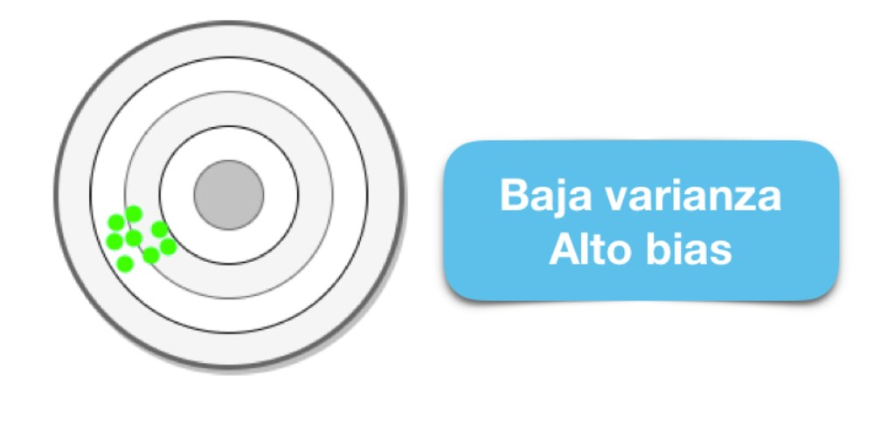
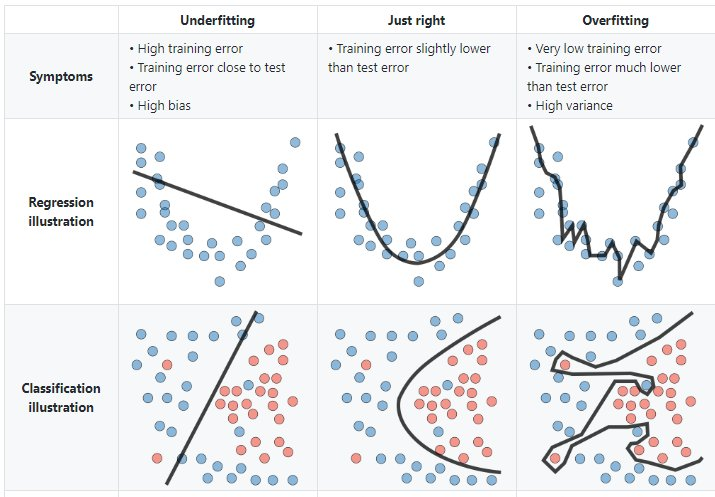
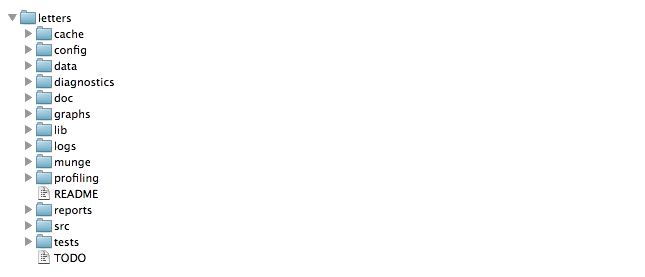
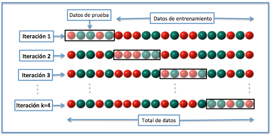
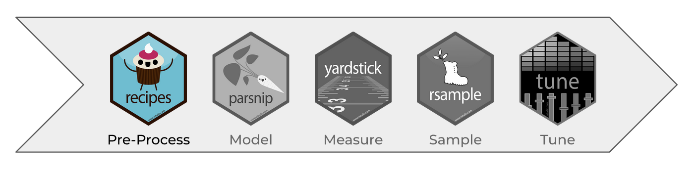
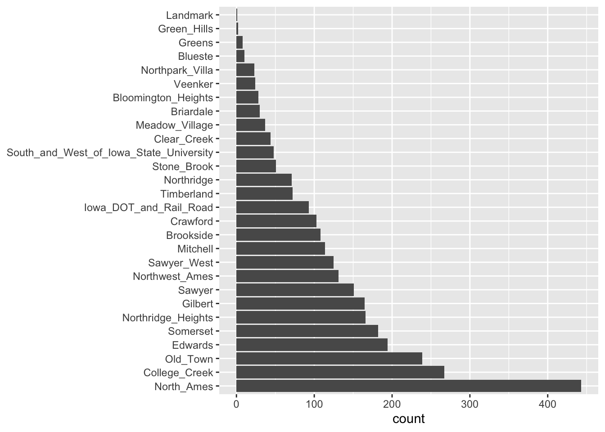

Capítulo 4 Introducción a Machine Learning
Como se había mencionado, el Machine Learning es una disciplina del campo de la Inteligencia Artificial que, a través de algoritmos, dota a los ordenadores de la capacidad de identificar patrones en datos para hacer predicciones. Este aprendizaje permite a los computadores realizar tareas específicas de forma autónoma.
El término se utilizó por primera vez en 1959. Sin embargo, ha ganado relevancia en los últimos años debido al aumento de la capacidad de computación y al BOOM de los datos.
Un algoritmo para computadoras puede ser pensado como una receta. Describe exactamente qué pasos se realizan uno tras otro. Los ordenadores no entienden las recetas de cocina, sino los lenguajes de programación: En ellos, el algoritmo se descompone en pasos formales (comandos) que el ordenador puede entender.
La cuestión no es solo saber para qué sirve el Machine Learning, sino que saber cómo funciona y cómo poder implementarlo en la industria para aprovecharse de sus beneficios. Hay ciertos pasos que usualmente se siguen para crear un modelo de Machine Learning. Estos son típicamente realizados por científicos de los datos que trabajan en estrecha colaboración con los profesionales de los negocios para los que se está desarrollando el modelo.
- Seleccionar y preparar un conjunto de datos de entrenamiento
Los datos de entrenamiento son un conjunto de datos representativos de los datos que el modelo de Machine Learning ingerirá para resolver el problema que está diseñado para resolver.
Los datos de entrenamiento deben prepararse adecuadamente: aleatorizados y comprobados en busca de desequilibrios o sesgos que puedan afectar al entrenamiento. También deben dividirse en dos subconjuntos: el subconjunto de entrenamiento, que se utilizará para entrenar el algoritmo, y el subconjunto de validación, que se utilizará para probarlo y perfeccionarlo.

- Elegir un algoritmo para ejecutarlo en el conjunto de datos de entrenamiento
Este es uno de los pasos más importantes, ya que se debe elegir qué algoritmo utilizar, siendo este un conjunto de pasos de procesamiento estadístico. El tipo de algoritmo depende del tipo (supervisado o no supervisado), la cantidad de datos del conjunto de datos de entrenamiento y del tipo de problema que se debe resolver.

- Entrenamiento del algoritmo para crear el modelo
El entrenamiento del algoritmo es un proceso iterativo: implica ejecutar las variables a través del algoritmo, comparar el resultado con los resultados que debería haber producido, ajustar los pesos y los sesgos dentro del algoritmo que podrían dar un resultado más exacto, y ejecutar las variables de nuevo hasta que el algoritmo devuelva el resultado correcto la mayoría de las veces. El algoritmo resultante, entrenado y preciso, es el modelo de Machine Learning.

- Usar y mejorar el modelo
El paso final es utilizar el modelo con nuevos datos y, en el mejor de los casos, para que mejore en precisión y eficacia con el tiempo. De dónde procedan los nuevos datos dependerá del problema que se resuelva. Por ejemplo, un modelo de Machine Learning diseñado para identificar el spam ingerirá mensajes de correo electrónico, mientras que un modelo de Machine Learning que maneja una aspiradora robot ingerirá datos que resulten de la interacción en el mundo real con muebles movidos o nuevos objetos en la habitación.

4.1 Análisis Supervisado vs No supervisado
Los algoritmos de Machine Learning se dividen en tres categorías, siendo las dos primeras las más comunes:

- Aprendizaje supervisado: estos algoritmos cuentan con un aprendizaje previo basado en un sistema de etiquetas asociadas a unos datos que les permiten tomar decisiones o hacer predicciones.
Algunos ejemplos son:
- Un detector de spam que etiqueta un e-mail como spam o no.
- Predecir precios de casas
- Clasificación de imagenes
- Predecir el clima
- ¿Quiénes son los clientes descontentos?- Aprendizaje no supervisado: en el aprendizaje supervisado, la idea principal es aprender bajo supervisión, donde la señal de supervisión se nombra como valor objetivo o etiqueta. En el aprendizaje no supervisado, carecemos de este tipo de etiqueta. Por lo tanto, necesitamos encontrar nuestro camino sin ninguna supervisión ni guía. Esto simplemente significa que necesitamos descubrir qué es qué por nosotros mismos.
Algunos ejemplos son:
- Encontrar segmentos de clientes.
- Reducir la complejidad de un problema
- Selección de variables
- Encontrar grupos
- Reducción de dimensionalidad- Aprendizaje por refuerzo: su objetivo es que un algoritmo aprenda a partir de la propia experiencia. Esto es, que sea capaz de tomar la mejor decisión ante diferentes situaciones de acuerdo a un proceso de prueba y error en el que se recompensan las decisiones correctas.
Algunos ejemplos son:
- Reconocimiento facial
- Diagnósticos médicos
- Clasificar secuencias de ADN4.1.1 Regresión vs clasificación
Existen dos tipos principales de aprendizaje supervisado, esto depende del tipo de la variable respuesta:

4.2 Sesgo vs varianza
En el mundo de Machine Learning cuando desarrollamos un modelo nos esforzamos para hacer que sea lo más preciso, ajustando los parámetros, pero la realidad es que no se puede construir un modelo 100% preciso ya que nunca pueden estar libres de errores.
Comprender cómo las diferentes fuentes de error generan sesgo y varianza nos ayudará a mejorar el proceso de ajuste de datos, lo que resulta en modelos más precisos, adicionalmente también evitará el error de sobre-ajuste y falta de ajuste.
4.2.1 Balance entre sesgo y varianza o Trade-off
El objetivo de cualquier algoritmo supervisado de Machine Learning es lograr un sesgo bajo, una baja varianza y a su vez el algoritmo debe lograr un buen rendimiento de predicción.

El sesgo frente a la varianza se refiere a la precisión frente a la consistencia de los modelos entrenados por su algoritmo. Podemos diagnosticarlos de la siguiente manera:

Los algoritmos de baja varianza (alto sesgo) tienden a ser menos complejos, con una estructura subyacente simple o rígida.

Los algoritmos de bajo sesgo (alta varianza) tienden a ser más complejos, con una estructura subyacente flexible.
No hay escapatoria a la relación entre el sesgo y la varianza en Machine Learning, aumentar el sesgo disminuirá la varianza, aumentar la varianza disminuirá el sesgo.
4.2.2 Error total
Comprender el sesgo y la varianza es fundamental para comprender el comportamiento de los modelos de predicción, pero en general lo que realmente importa es el error general, no la descomposición específica. El punto ideal para cualquier modelo es el nivel de complejidad en el que el aumento en el sesgo es equivalente a la reducción en la varianza.
Para construir un buen modelo, necesitamos encontrar un buen equilibrio entre el sesgo y la varianza de manera que minimice el error total.
4.2.3 Overfitting
El modelo es muy particular.
Error debido a la varianza
Durante el entrenamiento tiene un desempeño muy bueno, pero al pasar nuevos datos su desempeño es malo.
4.2.4 Underfitting
El modelo es demasiado general.
Error debido al sesgo.
Durante el entrenamiento no tiene un buen desempeño.

4.2.5 Error irreducible
El error irreducible no se puede reducir, independientemente de qué algoritmo se usa. También se le conoce como ruido y, por lo general, proviene por factores como variables desconocidas que influyen en el mapeo de las variables de entrada a la variable de salida, un conjunto de características incompleto o un problema mal enmarcado. Acá es importante comprender que no importa cuán bueno hagamos nuestro modelo, nuestros datos tendrán cierta cantidad de ruido o un error irreductible que no se puede eliminar.
4.3 Orden y estructura de proyecto
Resulta elemental contar con una adecuada estructura de carpetas que permitan al analista mantener orden y control a lo largo de todo el proyecto. Gran parte del caos en los problemas de analítica de datos nace desde el momento en que no se sabe en donde ubicar cada uno de los archivos necesarios para el proyecto.
4.3.1 Plantilla de estructura proyecto
En esta sección, se presenta una introducción a la librería ProjectTemplate, la cual facilita una estructura predeterminada que ayudará como punto de partida para mantener orden y control en cada momento del proyecto.
library(ProjectTemplate)
create.project(project.name = 'intro2dsml', rstudio.project = T)create.project() creará toda la estructura de carpetas para un nuevo proyecto. Configurará todos los directorios relevantes y sus contenidos iniciales. Para aquellos que solo desean la funcionalidad mínima, el argumento de template se puede establecer en minimal para crear un subconjunto de directorios predeterminados de ProjectTemplate.

cache: En esta carpeta se almacenarán los datos que desear cargarse automáticamente cuando se cargue la sesión del proyecto.
config: Se realiza la configuración de R y su sesión, la cual será establecida cada que se abra el proyecto.
data: Se almacenan las fuentes de información crudas necesarias en el proyecto. En caso de encontrarse codificadas en algún formato de archivo soportado por la librería, automáticamente serán cargadas a la sesión con la función
load.project()diagnostics: En este folder puedes almacenar cualquier script usado para realizar diagnósticos sobre los datos. Es particularmente útil para al análisis de elementos corruptos o problemáticos dentro del conjunto de datos.
doc: En este folder puede almacenarse cualquier documentación que haya escrito sobre el análisis. También se puede usar como directorio raíz para las páginas de GitHub para crear un sitio web de proyecto.
graphs: Sirve para almacenar las gráficas producidas por el análisis
lib: Aquí se almacenarán todos los archivos que proporcionen una funcionalidad útil para su trabajo, pero que no constituyan un análisis estadístico per se. Específicamente, debe usar el script lib/helpers.R para organizar cualquier función que use en su proyecto que no sea lo suficientemente general como para pertenecer a un paquete. Si tiene una configuración específica del proyecto que le gustaría almacenar en el objeto de configuración, puede especificarla en lib/globals.R.
logs: Aquí puede almacenarse un archivo de registro de cualquier trabajo que haya realizado en este proyecto. Si va a registrar su trabajo, se recomienda utilizar el paquete log4r, que ProjectTemplate cargará automáticamente si activa la opción de configuración de registro. El nivel de registro se puede establecer a través de la configuración logging_level en la configuración, el valor predeterminado es “INFO”.
munge: En este folder puede almacenarse cualquier código de pre-procesamiento o manipulación de datos para el proyecto. Por ejemplo, si necesita agregar columnas en tiempo de ejecución, fusionar conjuntos de datos normalizados o censurar globalmente cualquier punto de datos, ese código debe almacenarse en el directorio munge. Los scripts de pre-procesamiento almacenados en munge se ejecutarán en orden alfabético cuando se llame a la función load.project(), por lo que debe anteponerse números a los nombres de archivo para indicar su orden secuencial.
profiling: Aquí puede almacenar cualquier script que use para comparar y cronometrar su código.
reports: Aquí puede almacenar cualquier informe de salida, como versiones de tablas HTML o LaTeX, que produzca. Los documentos de sweave o brew también deben ir en el directorio de informes.
src: Aquí se almacenarán los scripts de análisis estadístico finales. Debe agregar el siguiente fragmento de código al comienzo de cada secuencia de comandos de análisis:
library('ProjectTemplate); load.project(). También debe hacer todo lo posible para asegurarse de que cualquier código compartido entre los análisis en src se mueva al directorio munge; si lo hace, puede ejecutar todos los análisis en el directorio src en paralelo. Una versión futura de ProjectTemplate proporcionará herramientas para ejecutar automáticamente cada análisis individual de src en paralelo.tests: Aquí puede almacenarse cualquier caso de prueba para las funciones que ha escrito. Los archivos de prueba deben usar pruebas de estilo testthat para que pueda llamar a la función
test.project()para ejecutar automáticamente todo su código de prueba.README: En este archivo, debe escribir algunas notas para ayudar a orientar a los recién llegados a su proyecto.
TODO: En este archivo, debe escribir una lista de futuras mejoras y correcciones de errores que planea realizar en sus análisis.
Si algunas o todas estas carpetas resultan innecesarias, puede comenzarse con una versión simplificada a través del comando:
create.project(project.name = 'intro2dsml', template='minimal')
4.4 Partición de datos

Cuando hay una gran cantidad de datos disponibles, una estrategia inteligente es asignar subconjuntos específicos de datos para diferentes tareas, en lugar de asignar la mayor cantidad posible solo a la estimación de los parámetros del modelo.
Si el conjunto inicial de datos no es lo suficientemente grande, habrá cierta superposición de cómo y cuándo se asignan nuestros datos, y es importante contar con una metodología sólida para la partición de datos.
4.4.1 Métodos comunes para particionar datos
El enfoque principal para la validación del modelo es dividir el conjunto de datos existente en dos conjuntos distintos:
Entrenamiento: Este conjunto suele contener la mayoría de los datos, los cuales sirven para la construcción de modelos donde se pueden ajustar diferentes modelos, se investigan estrategias de ingeniería de características, etc.
La mayor parte del proceso de modelado se utiliza este conjunto.
Prueba: La otra parte de las observaciones se coloca en este conjunto. Estos datos se mantienen en reserva hasta que se elijan uno o dos modelos como los de mejor rendimiento.
El conjunto de prueba se utiliza como árbitro final para determinar la eficiencia del modelo, por lo que es fundamental mirar el conjunto de prueba una sola vez.
Supongamos que asignamos el \(80\%\) de los datos al conjunto de entrenamiento y
el \(20\%\) restante a las pruebas. El método más común es utilizar un muestreo
aleatorio simple. El paquete rsample tiene herramientas para realizar
divisiones de datos como esta; la función initial_split() fue creada para este
propósito.
library(tidymodels)
tidymodels_prefer()
# Fijar un número aleatorio con para que los resultados puedan ser reproducibles
set.seed(123)
# Partición 80/20 de los datos
ames_split <- initial_split(ames, prop = 0.80)
ames_split## <Training/Testing/Total>
## <2344/586/2930>La información impresa denota la cantidad de datos en el conjunto de entrenamiento \((n = 2,344)\), la cantidad en el conjunto de prueba \((n = 586)\) y el tamaño del grupo original de muestras \((n = 2,930)\).
El objeto ames_split es un objeto rsplit y solo contiene la información de
partición; para obtener los conjuntos de datos resultantes, aplicamos dos
funciones más:
ames_train <- training(ames_split)
ames_test <- testing(ames_split)
dim(ames_train)## [1] 2344 74El muestreo aleatorio simple es apropiado en muchos casos, pero hay excepciones.
Cuando hay un desbalance de clases en los problemas de clasificación, el uso de una muestra aleatoria simple puede asignar al azar estas muestras poco frecuentes de manera desproporcionada al conjunto de entrenamiento o prueba.
Para evitar esto, se puede utilizar un muestreo estratificado. La división de entrenamiento/prueba se lleva a cabo por separado dentro de cada clase y luego estas submuestras se combinan en el conjunto general de entrenamiento y prueba.
Para los problemas de regresión, los datos de los resultados se pueden agrupar artificialmente en cuartiles y luego realizar un muestreo estratificado cuatro veces por separado. Este es un método eficaz para mantener similares las distribuciones del resultado entre el conjunto de entrenamiento y prueba.
Observamos que la distribución del precio de venta está sesgada a la derecha. Las casas más caras no estarían bien representadas en el conjunto de entrenamiento con una simple partición; esto aumentaría el riesgo de que nuestro modelo sea ineficaz para predecir el precio de dichas propiedades.
Las líneas verticales punteadas indican los cuatro cuartiles para estos datos. Una muestra aleatoria estratificada llevaría a cabo la división 80/20 dentro de cada uno de estos subconjuntos de datos y luego combinaría los resultados. En rsample, esto se logra usando el argumento de estratos:
set.seed(123)
ames_split <- initial_split(ames, prop = 0.80, strata = Sale_Price)
ames_train <- training(ames_split)
ames_test <- testing(ames_split)Hay muy pocas desventajas en el uso de muestreo estratificado.
Un caso es cuando los datos tienen un componente de tiempo, como los datos de series de tiempo. Aquí, es más común utilizar los datos más recientes como conjunto de prueba.
El paquete rsample contiene una función llamada initial_time_split() que es
muy similar a initial_split(). En lugar de usar un muestreo aleatorio, el
argumento prop denota qué proporción de la primera parte de los datos debe
usarse como conjunto de entrenamiento; la función asume que los datos se han
clasificado previamente en un orden apropiado.
¿Qué proporción debería ser usada?
No hay un porcentaje de división óptimo para el conjunto de entrenamiento y prueba. Muy pocos datos en el conjunto de entrenamiento obstaculizan la capacidad del modelo para encontrar estimaciones de parámetros adecuadas y muy pocos datos en el conjunto de prueba reducen la calidad de las estimaciones de rendimiento.
Se debe elegir un porcentaje que cumpla con los objetivos de nuestro proyecto con consideraciones que incluyen:
- Costo computacional en el entrenamiento del modelo.
- Costo computacional en la evaluación del modelo.
- Representatividad del conjunto de formación.
- Representatividad del conjunto de pruebas.
Los porcentajes de división más comunes comunes son:
- Entrenamiento: \(80\%\), Prueba: \(20\%\)
- Entrenamiento: \(67\%\), Prueba: \(33\%\)
- Entrenamiento: \(50\%\), Prueba: \(50\%\)
4.4.2 Conjunto de validación
El conjunto de validación se definió originalmente cuando los investigadores se dieron cuenta de que medir el rendimiento del conjunto de entrenamiento conducía a resultados que eran demasiado optimistas.
Esto llevó a modelos que se sobre-ajustaban, lo que significa que se desempeñaron muy bien en el conjunto de entrenamiento pero mal en el conjunto de prueba.
Para combatir este problema, se retuvo un pequeño conjunto de datos de validación y se utilizó para medir el rendimiento del modelo mientras este está siendo entrenado. Una vez que la tasa de error del conjunto de validación comenzara a aumentar, la capacitación se detendría.
En otras palabras, el conjunto de validación es un medio para tener una idea aproximada de qué tan bien se desempeñó el modelo antes del conjunto de prueba.

Los conjuntos de validación se utilizan a menudo cuando el conjunto de datos original es muy grande. En este caso, una sola partición grande puede ser adecuada para caracterizar el rendimiento del modelo sin tener que realizar múltiples iteraciones de remuestreo.
Con rsample, un conjunto de validación es como cualquier otro objeto de remuestreo; este tipo es diferente solo en que tiene una sola iteración

set.seed(12)
val_set <- validation_split(ames_train, prop = 3/4, strata = NULL)
val_set #val_set contiene el conjunto de entrenamiento y validación.## # Validation Set Split (0.75/0.25)
## # A tibble: 1 × 2
## splits id
## <list> <chr>
## 1 <split [1756/586]> validationEsta función regresa una columna para los objetos de división de datos y una columna llamada id que tiene una cadena de caracteres con el identificador de remuestreo.
El argumento de estratos hace que el muestreo aleatorio se lleve a cabo dentro de la variable de estratificación. Esto puede ayudar a garantizar que el número de datos en los datos del análisis sea equivalente a las proporciones del conjunto de datos original. (Los estratos inferiores al 10% del total se agrupan).
Otra opción de muestreo bastante común es la realizada mediante múltiples submuestras de los datos originales.

Diversos métodos se revisarán a lo largo del curso.
4.4.3 Leave-one-out cross-validation
La validación cruzada es una manera de predecir el ajuste de un modelo a un hipotético conjunto de datos de prueba cuando no disponemos del conjunto explícito de datos de prueba.
El método LOOCV en un método iterativo que se inicia empleando como conjunto de entrenamiento todas las observaciones disponibles excepto una, que se excluye para emplearla como validación.
Si se emplea una única observación para calcular el error, este varía mucho dependiendo de qué observación se haya seleccionado. Para evitarlo, el proceso se repite tantas veces como observaciones disponibles se tengan, excluyendo en cada iteración una observación distinta, ajustando el modelo con el resto y calculando el error con dicha observación.
Finalmente, el error estimado por el es el promedio de todos lo \(i\) errores calculados.
La principal desventaja de este método es su costo computacional. El proceso requiere que el modelo sea reajustado y validado tantas veces como observaciones disponibles se tengan lo que en algunos casos puede ser muy complicado.
rsample contiene la función loo_cv().
set.seed(55)
ames_loo <- loo_cv(ames_train)
ames_loo## # Leave-one-out cross-validation
## # A tibble: 2,342 × 2
## splits id
## <list> <chr>
## 1 <split [2341/1]> Resample1
## 2 <split [2341/1]> Resample2
## 3 <split [2341/1]> Resample3
## 4 <split [2341/1]> Resample4
## 5 <split [2341/1]> Resample5
## 6 <split [2341/1]> Resample6
## 7 <split [2341/1]> Resample7
## 8 <split [2341/1]> Resample8
## 9 <split [2341/1]> Resample9
## 10 <split [2341/1]> Resample10
## # ℹ 2,332 more rows4.4.3.1 Cálculo del error
En la validación cruzada dejando uno fuera se realizan tantas iteraciones como muestras \((N)\) tenga el conjunto de datos. De forma que para cada una de las \(N\) iteraciones se realiza un cálculo de error.
El resultado final se obtiene realizando la media de los \(N\) errores obtenidos, según la fórmula:
\[E = \frac{1}{N}\sum_{i = 1}^N E_i\]
4.4.4 V Fold Cross Validation
En la validación cruzada de V iteraciones (V Fold Cross Validation) los datos de muestra se dividen en V subconjuntos. Uno de los subconjuntos se utiliza como datos de prueba y el resto \((V-1)\) como datos de entrenamiento. El proceso de validación cruzada es repetido durante \(v\) iteraciones, con cada uno de los posibles subconjuntos de datos de prueba.
Finalmente se obtiene el promedio de los rendimientos de cada iteración para obtener un único resultado. Lo más común es utilizar la validación cruzada de 10 iteraciones.

Este método de validación cruzada se utiliza principalmente para:
Estimar el error cuando nuestro conjunto de prueba es muy pequeño. Es decir, se tiene la misma configuración de parámetros y solamente cambia el conjunto de prueba y validación.
Encontrar lo mejores hiperparámetros que ajusten mejor el modelo. Es decir, en cada bloque se tiene una configuración de hiperparámetros distinto y se seleccionará aquellos hiperparámetros que hayan producido el error más pequeño.
En la función vfold_cv() la entrada principal es el conjunto de entrenamiento,
así como el número de bloques:
set.seed(55)
ames_folds <- vfold_cv(ames_train, v = 10)
ames_folds## # 10-fold cross-validation
## # A tibble: 10 × 2
## splits id
## <list> <chr>
## 1 <split [2107/235]> Fold01
## 2 <split [2107/235]> Fold02
## 3 <split [2108/234]> Fold03
## 4 <split [2108/234]> Fold04
## 5 <split [2108/234]> Fold05
## 6 <split [2108/234]> Fold06
## 7 <split [2108/234]> Fold07
## 8 <split [2108/234]> Fold08
## 9 <split [2108/234]> Fold09
## 10 <split [2108/234]> Fold10La columna denominada splits contiene la información sobre cómo dividir los
datos (similar al objeto utilizado para crear la partición inicial de
entrenamiento / prueba).
Si bien cada fila de divisiones tiene una copia incrustada de todo el conjunto de entrenamiento, R es lo suficientemente inteligente como para no hacer copias de los datos en la memoria.
El método de impresión dentro del tibble muestra la frecuencia de cada uno: [2K / 230] indica que aproximadamente dos mil muestras están en el conjunto de análisis y 230 están en ese conjunto de evaluación en particular.
Estos objetos rsample también contienen siempre una columna de caracteres llamada id que etiqueta la partición. Algunos métodos de remuestreo requieren varios campos de identificación.
Para recuperar manualmente los datos particionados, las funciones de
analysis() y assessment() devuelven los de datos de análisis y evaluación
respectivamente.
# Primer bloque
ames_folds$splits[[1]] %>%
analysis() %>% # O assessment()
head(7)## # A tibble: 7 × 74
## MS_SubClass MS_Zoning Lot_Frontage Lot_Area Street Alley Lot_Shape
## <fct> <fct> <dbl> <int> <fct> <fct> <fct>
## 1 One_Story_1946_and_New… Resident… 70 8400 Pave No_A… Regular
## 2 Two_Story_PUD_1946_and… Resident… 21 1680 Pave No_A… Regular
## 3 Two_Story_PUD_1946_and… Resident… 21 1680 Pave No_A… Regular
## 4 Two_Story_PUD_1946_and… Resident… 21 1680 Pave No_A… Regular
## 5 One_Story_PUD_1946_and… Resident… 53 4043 Pave No_A… Regular
## 6 One_Story_PUD_1946_and… Resident… 24 2280 Pave No_A… Regular
## 7 One_Story_PUD_1946_and… Resident… 50 7175 Pave No_A… Regular
## # ℹ 67 more variables: Land_Contour <fct>, Utilities <fct>, Lot_Config <fct>,
## # Land_Slope <fct>, Neighborhood <fct>, Condition_1 <fct>, Condition_2 <fct>,
## # Bldg_Type <fct>, House_Style <fct>, Overall_Cond <fct>, Year_Built <int>,
## # Year_Remod_Add <int>, Roof_Style <fct>, Roof_Matl <fct>,
## # Exterior_1st <fct>, Exterior_2nd <fct>, Mas_Vnr_Type <fct>,
## # Mas_Vnr_Area <dbl>, Exter_Cond <fct>, Foundation <fct>, Bsmt_Cond <fct>,
## # Bsmt_Exposure <fct>, BsmtFin_Type_1 <fct>, BsmtFin_SF_1 <dbl>, …4.4.5 Medidas de ajuste
Las medidas de ajuste obtenidas pueden ser utilizadas para estimar cualquier medida cuantitativa de ajuste apropiada para los datos y el modelo.
En un modelo basado en clasificación binaria, para resumir el ajuste del modelo se pueden usar las medidas:
- Tasa de error de clasificación (Accuracy)
- Precisión
- Sensibilidad o cobertura (Recall)
- Especificidad
Cuando el valor a predecir se distribuye de forma continua se puede calcular el error utilizando medidas como:
- Error porcentual absoluto medio (MAPE)
- Error absoluto medio (MAE)
- Error cuadrático medio (MSE)
- Raíz del error cuadrático medio (RMSE)
- Raíz del error logarítmico cuadrático medio (RMLSE)
- \(R^2\) (Coeficiente de determinación)
- \(R^2_a\) (Coeficiente de determinación ajustado)
4.4.6 Validación cruzada para series de tiempo
En este procedimiento, hay una serie de conjuntos de prueba, cada uno de los cuales consta de una única observación. El conjunto de entrenamiento correspondiente consta solo de observaciones que ocurrieron antes de la observación que forma el conjunto de prueba. Por lo tanto, no se pueden utilizar observaciones futuras para construir el pronóstico.
El siguiente diagrama ilustra la serie de conjuntos de entrenamiento y prueba, donde las observaciones azules forman los conjuntos de entrenamiento y las observaciones rojas forman los conjuntos de prueba.

La precisión del pronóstico se calcula promediando los conjuntos de prueba. Este procedimiento a veces se conoce como “evaluación en un origen de pronóstico continuo” porque el “origen” en el que se basa el pronóstico avanza en el tiempo.
Con los pronósticos de series de tiempo, los pronósticos de un paso pueden no ser tan relevantes como los pronósticos de varios pasos. En este caso, el procedimiento de validación cruzada basado en un origen de pronóstico continuo se puede modificar para permitir el uso de errores de varios pasos.
Suponga que estamos interesados en modelos que producen buenos pronósticos de 4 pasos por delante. Entonces el diagrama correspondiente se muestra a continuación.

La validación cruzada de series de tiempo se implementa con la función tsCV()
del paquete forecast.
4.5 Pre-procesamiento de datos
Hay varios pasos que se deben de seguir para crear un modelo útil:
- Recopilación de datos.
- Limpieza de datos.
- Creación de nuevas variables.
- Estimación de parámetros.
- Selección y ajuste del modelo.
- Evaluación del rendimiento.
Al comienzo de un proyecto, generalmente hay un conjunto finito de datos disponibles para todas estas tareas.
OJO: A medida que los datos se reutilizan para múltiples tareas, aumentan los riesgos de agregar sesgos o grandes efectos de errores metodológicos.

Como punto de partida para nuestro flujo de trabajo de aprendizaje automático, necesitaremos datos de entrada. En la mayoría de los casos, estos datos se cargarán y almacenarán en forma de data frames o tibbles en R. Incluirán una o varias variables predictivas y, en caso de aprendizaje supervisado, también incluirán un resultado conocido.
Sin embargo, no todos los modelos pueden lidiar con diferentes problemas de datos y, a menudo, necesitamos transformar los datos para obtener el mejor rendimiento posible del modelo. Este proceso se denomina pre-procesamiento y puede incluir una amplia gama de pasos, como:
- Dicotomización de variables: Variables cualitativas que solo pueden tomar el valor \(0\) o \(1\) para indicar la ausencia o presencia de una condición específica. Estas variables se utilizan para clasificar los datos en categorías mutuamente excluyentes o para activar comandos de encendido / apagado


- Near Zero Value (nzv) o Varianza Cero: En algunas situaciones, el mecanismo de generación de datos puede crear predictores que solo tienen un valor único (es decir, un “predictor de varianza cercando a cero”). Para muchos modelos (excluidos los modelos basados en árboles), esto puede hacer que el modelo se bloquee o que el ajuste sea inestable.
De manera similar, los predictores pueden tener solo una pequeña cantidad de valores únicos que ocurren con frecuencias muy bajas.
- Imputaciones: Si faltan algunos predictores, ¿deberían estimarse mediante imputación?

- Des-correlacionar: Si hay predictores correlacionados, ¿debería mitigarse esta correlación? Esto podría significar filtrar predictores, usar análisis de componentes principales o una técnica basada en modelos (por ejemplo, regularización).

- Normalizar: ¿Deben centrarse y escalar los predictores?

- Transformar: ¿Es útil transformar los predictores para que sean más simétricos? (por ejemplo, escala logarítmica).
Dependiendo del caso de uso, algunos pasos de pre-procesamiento pueden ser indispensables para pasos posteriores, mientras que otros solo son opcionales. Sin embargo, dependiendo de los pasos de pre-procesamiento elegidos, el rendimiento del modelo puede cambiar significativamente en pasos posteriores. Por lo tanto, es muy común probar varias configuraciones.
4.6 Ingeniería de datos
La ingeniería de datos abarca actividades que dan formato a los valores de los predictores para que se puedan utilizar de manera eficaz para nuestro modelo. Esto incluye transformaciones y codificaciones de los datos para representar mejor sus características importantes.
Por ejemplo:
1.- Supongamos que un conjunto de datos tiene dos predictores que se pueden representar de manera más eficaz en nuestro modelo como una proporción, así, tendríamos un nuevo predictor a partir de la proporción de los dos predictores originales.
| X | Proporción (X) |
|---|---|
| 691 | 0.1836789 |
| 639 | 0.1698565 |
| 969 | 0.2575758 |
| 955 | 0.2538543 |
| 508 | 0.1350346 |
2.- Al elegir cómo codificar nuestros datos en el modelado, podríamos elegir una opción que creemos que está más asociada con el resultado. El formato original de los datos, por ejemplo numérico (edad) versus categórico (grupo).
| Edad | Grupo |
|---|---|
| 7 | Niños |
| 78 | Adultos mayores |
| 17 | Adolescentes |
| 25 | Adultos |
| 90 | Adultos mayores |
La ingeniería y el pre-procesamiento de datos también pueden implicar el cambio de formato requerido por el modelo. Algunos modelos utilizan métricas de distancia geométrica y, en consecuencia, los predictores numéricos deben centrarse y escalar para que estén todos en las mismas unidades. De lo contrario, los valores de distancia estarían sesgados por la escala de cada columna.
4.7 Recetas

Una receta es una serie de pasos o instrucciones para el procesamiento de datos. A diferencia del método de fórmula dentro de una función de modelado, la receta define los pasos sin ejecutarlos inmediatamente; es sólo una especificación de lo que se debe hacer. La estructura de una receta sigue los siguientes pasos:
Inicialización
Transformación
Preparación
Aplicación
La siguiente sección explica la estructura y flujo de transformaciones:
receta <- recipe(response ~ X1 + X2 + X3 + ... + Xn, data = dataset ) %>%
transformation_1(...) %>%
transformation_2(...) %>%
transformation_3(...) %>%
...
final_transformation(...) %>%
prep()
bake(receta, new_data = new_dataset)A continuación se muestran distintos ejemplos de transformaciones realizadas
comúnmente en el pre-procesamiento de modelos predictivos. Como ejemplo,
utilizaremos el subconjunto de predictores disponibles en los datos de vivienda:
Ames
Vecindario (29 vecindarios)
Superficie habitable bruta sobre el nivel del suelo
Año de constricción
Tipo de edificio
ANTERIORMENTE… Un modelo de regresión lineal ordinario se ajustaba a los
datos con la función estándar lm() de la siguiente manera:
lm(Sale_Price ~ Neighborhood + log10(Gr_Liv_Area) + Year_Built + Bldg_Type, data = ames)Cuando se ejecuta esta función, los datos se convierten en a una matriz de diseño numérico (también llamada matriz de modelo) y luego se utiliza el método de mínimos cuadrados para estimar los parámetros. Lo que hace la fórmula anterior se puede descomponer en una serie de pasos:
1.- El precio de venta se define como el resultado, mientras que las variables de vecindario, superficie habitable bruta, año de construcción y tipo de edificio se definen como predictores.
2.- Se aplica una transformación logarítmica al predictor de superficie habitable bruta.
3.- Las columnas de vecindad y tipo de edificio se convierten de un formato no numérico a un formato numérico (dado que los mínimos cuadrados requieren predictores numéricos).
La siguiente receta es equivalente a la fórmula anterior:
simple_ames <- recipe(
Sale_Price ~ Neighborhood + Gr_Liv_Area + Year_Built + Bldg_Type,
data = ames) %>%
step_log(Gr_Liv_Area, base = 10) %>%
step_dummy(all_nominal_predictors())
simple_ames## Recipe
##
## Inputs:
##
## role #variables
## outcome 1
## predictor 4
##
## Operations:
##
## Log transformation on Gr_Liv_Area
## Dummy variables from all_nominal_predictors()Ventajas de usar una receta:
Los cálculos se pueden reciclar entre modelos ya que no están estrechamente acoplados a la función de modelado.
Una receta permite un conjunto más amplio de opciones de procesamiento de datos que las que pueden ofrecer las fórmulas.
La sintaxis puede ser muy compacta. Por ejemplo,
all_nominal_predictors()se puede usar para capturar muchas variables para tipos específicos de procesamiento, mientras que una fórmula requeriría que cada una se enumere explícitamente.Todo el procesamiento de datos se puede capturar en un solo objeto en lugar de tener scripts que se repiten o incluso se distribuyen en diferentes archivos.
4.7.1 Pasos y estructura de recetas
Como se mostró anteriormente, existen 4 pasos fundamentales para el procesamiento y transformación de conjuntos de datos. Estos pasos se describen de la siguiente manera:
Receta: Inicializa una receta y define los roles de las variables
Transformaciones: Mutaciones a los renglones y columnas hasta desear el resultado
Preparación: Se realizan las estimaciones estadísticas con los datos
La función prep() estima las cantidades requeridas y las estadísticas
necesarias para cualquier paso declarado en la receta.
prep <- prep(simple_ames)
prep## Recipe
##
## Inputs:
##
## role #variables
## outcome 1
## predictor 4
##
## Training data contained 2930 data points and no missing data.
##
## Operations:
##
## Log transformation on Gr_Liv_Area [trained]
## Dummy variables from Neighborhood, Bldg_Type [trained]- Aplicación Se llevan a cabo las transformaciones especificadas en la receta preparada a un conjunto de datos.
Finalmente, la función bake() lleva a cabo la transformación de un
conjunto de datos a través de las estimaciones indicadas en una receta y
aplica las operaciones a un conjunto de datos para crear una matriz de
diseño. La función bake(object, new_data = NULL) devolverá los datos con los
que se entrenó la receta.
Nota: La función juice() devolverá los resultados de una receta en la
que se hayan aplicado todos los pasos a los datos. Similar a la función bake()
con el comando new_data = NULL.
simple_ames %>%
prep() %>%
bake(new_data = NULL) %>%
glimpse()## Rows: 2,930
## Columns: 35
## $ Gr_Liv_Area <dbl> 3.219060, 2.95230…
## $ Year_Built <int> 1960, 1961, 1958,…
## $ Sale_Price <int> 215000, 105000, 1…
## $ Neighborhood_College_Creek <dbl> 0, 0, 0, 0, 0, 0,…
## $ Neighborhood_Old_Town <dbl> 0, 0, 0, 0, 0, 0,…
## $ Neighborhood_Edwards <dbl> 0, 0, 0, 0, 0, 0,…
## $ Neighborhood_Somerset <dbl> 0, 0, 0, 0, 0, 0,…
## $ Neighborhood_Northridge_Heights <dbl> 0, 0, 0, 0, 0, 0,…
## $ Neighborhood_Gilbert <dbl> 0, 0, 0, 0, 1, 1,…
## $ Neighborhood_Sawyer <dbl> 0, 0, 0, 0, 0, 0,…
## $ Neighborhood_Northwest_Ames <dbl> 0, 0, 0, 0, 0, 0,…
## $ Neighborhood_Sawyer_West <dbl> 0, 0, 0, 0, 0, 0,…
## $ Neighborhood_Mitchell <dbl> 0, 0, 0, 0, 0, 0,…
## $ Neighborhood_Brookside <dbl> 0, 0, 0, 0, 0, 0,…
## $ Neighborhood_Crawford <dbl> 0, 0, 0, 0, 0, 0,…
## $ Neighborhood_Iowa_DOT_and_Rail_Road <dbl> 0, 0, 0, 0, 0, 0,…
## $ Neighborhood_Timberland <dbl> 0, 0, 0, 0, 0, 0,…
## $ Neighborhood_Northridge <dbl> 0, 0, 0, 0, 0, 0,…
## $ Neighborhood_Stone_Brook <dbl> 0, 0, 0, 0, 0, 0,…
## $ Neighborhood_South_and_West_of_Iowa_State_University <dbl> 0, 0, 0, 0, 0, 0,…
## $ Neighborhood_Clear_Creek <dbl> 0, 0, 0, 0, 0, 0,…
## $ Neighborhood_Meadow_Village <dbl> 0, 0, 0, 0, 0, 0,…
## $ Neighborhood_Briardale <dbl> 0, 0, 0, 0, 0, 0,…
## $ Neighborhood_Bloomington_Heights <dbl> 0, 0, 0, 0, 0, 0,…
## $ Neighborhood_Veenker <dbl> 0, 0, 0, 0, 0, 0,…
## $ Neighborhood_Northpark_Villa <dbl> 0, 0, 0, 0, 0, 0,…
## $ Neighborhood_Blueste <dbl> 0, 0, 0, 0, 0, 0,…
## $ Neighborhood_Greens <dbl> 0, 0, 0, 0, 0, 0,…
## $ Neighborhood_Green_Hills <dbl> 0, 0, 0, 0, 0, 0,…
## $ Neighborhood_Landmark <dbl> 0, 0, 0, 0, 0, 0,…
## $ Neighborhood_Hayden_Lake <dbl> 0, 0, 0, 0, 0, 0,…
## $ Bldg_Type_TwoFmCon <dbl> 0, 0, 0, 0, 0, 0,…
## $ Bldg_Type_Duplex <dbl> 0, 0, 0, 0, 0, 0,…
## $ Bldg_Type_Twnhs <dbl> 0, 0, 0, 0, 0, 0,…
## $ Bldg_Type_TwnhsE <dbl> 0, 0, 0, 0, 0, 0,…En cuanto a las transformaciones posibles, existe una gran cantidad de funciones que soportan este proceso. En esta sección se muestran algunas de las transformación más comunes, entre ellas:
- Normalización
- Dicotomización
- Creación de nuevas columnas
- Datos faltantes
- Imputaciones
- Interacciones
- Etc.
4.7.1.1 Normalizar columnas numéricas
Quizá la transformación numérica más usada en todos los modelos es la estandarización o normalización de variables numéricas. Este proceso se realiza para homologar la escala de las variables numéricas, de modo que no predomine una sobre otra debido a la diferencia de magnitudes o escalas. Este proceso se tiene de fondo el siguiente proceso estadístico:
\[Z=\frac{X-\hat{\mu}_x}{\hat{\sigma}_x}\]
Donde:
X = Es una variable o columna numérica
\(\hat{\mu}_x\) = Es la estimación de la media de la variable X
\(\hat{\sigma}_x\) = Es la estimación de la desviación estándar de la variable X
La librería recipes nos permite realizar este proceso ágilmente mediante la
función: step_normalize().
ames %>% select(Sale_Price, Neighborhood, Gr_Liv_Area, Year_Built, Bldg_Type) %>%
head(5)## # A tibble: 5 × 5
## Sale_Price Neighborhood Gr_Liv_Area Year_Built Bldg_Type
## <int> <fct> <int> <int> <fct>
## 1 215000 North_Ames 1656 1960 OneFam
## 2 105000 North_Ames 896 1961 OneFam
## 3 172000 North_Ames 1329 1958 OneFam
## 4 244000 North_Ames 2110 1968 OneFam
## 5 189900 Gilbert 1629 1997 OneFamsimple_ames <- recipe(Sale_Price ~ ., data = ames) %>%
step_normalize(all_numeric_predictors())
simple_ames## Recipe
##
## Inputs:
##
## role #variables
## outcome 1
## predictor 73
##
## Operations:
##
## Centering and scaling for all_numeric_predictors()simple_ames %>%
prep() %>%
bake(new_data = NULL) %>%
select(Sale_Price, Neighborhood, Gr_Liv_Area, Year_Built, Bldg_Type) %>%
head(5)## # A tibble: 5 × 5
## Sale_Price Neighborhood Gr_Liv_Area Year_Built Bldg_Type
## <int> <fct> <dbl> <dbl> <fct>
## 1 215000 North_Ames 0.309 -0.375 OneFam
## 2 105000 North_Ames -1.19 -0.342 OneFam
## 3 172000 North_Ames -0.338 -0.442 OneFam
## 4 244000 North_Ames 1.21 -0.111 OneFam
## 5 189900 Gilbert 0.256 0.848 OneFam4.7.1.2 Dicotomización de categorías
Otra transformación necesaria en la mayoría de los modelos predictivos en la creación de las variables dummy. Se mencionó anteriormente que los modelos requieren de una matriz numérica de características explicativas que permita calcular patrones estadísticos para predecir la variable de respuesta. El proceso de dicotomización consiste en crear una variable dicotómica por cada categoría de una columna con valores nominales.
ames %>% select(Sale_Price, Bldg_Type) %>% head(5)## # A tibble: 5 × 2
## Sale_Price Bldg_Type
## <int> <fct>
## 1 215000 OneFam
## 2 105000 OneFam
## 3 172000 OneFam
## 4 244000 OneFam
## 5 189900 OneFamames %>% select(Bldg_Type) %>% distinct() %>% pull()## [1] OneFam TwnhsE Twnhs Duplex TwoFmCon
## Levels: OneFam TwoFmCon Duplex Twnhs TwnhsEsimple_ames <- recipe(Sale_Price ~ Bldg_Type, data = ames) %>%
step_dummy(all_nominal_predictors()) %>%
prep()
simple_ames## Recipe
##
## Inputs:
##
## role #variables
## outcome 1
## predictor 1
##
## Training data contained 2930 data points and no missing data.
##
## Operations:
##
## Dummy variables from Bldg_Type [trained]simple_ames %>% bake(new_data = NULL) %>% head(5)## # A tibble: 5 × 5
## Sale_Price Bldg_Type_TwoFmCon Bldg_Type_Duplex Bldg_Type_Twnhs
## <int> <dbl> <dbl> <dbl>
## 1 215000 0 0 0
## 2 105000 0 0 0
## 3 172000 0 0 0
## 4 244000 0 0 0
## 5 189900 0 0 0
## # ℹ 1 more variable: Bldg_Type_TwnhsE <dbl>El proceso de dicotomización demanda que únicamente (n-1) categorías sean
expresadas, mientras que la restante será considerada la categoría default o
basal. Esta última categoría es la usada en el modelo cuando todas las demás
se encuentran ausentes.
4.7.1.3 Codificación de datos cualitativos nuevos o faltantes
Una de las tareas de ingeniería de datos más comunes es el tratamiento de datos faltantes, datos no antes vistos y datos con poca frecuencia. El problema principal con estos casos es que los modelos no saben cómo relacionar estos eventos con futuras predicciones. Es conveniente realizar las transformaciones necesarias de tratamiento de estos datos antes de pasar a la etapa de modelado.
Por ejemplo:
step_unknown()cambia los valores perdidos en un nivel de factor “desconocido”.step_other()analiza las frecuencias de los niveles de los factores en el conjunto de datos y convierte los valores que ocurren con poca frecuencia a un nivel general de “otro”, con un umbral que se puede especificar.step_novel()puede asignar un nuevo nivel si anticipamos que se puede encontrar un nuevo factor en datos futuros.
Un buen ejemplo es el predictor de vecindad en nuestros datos. Aquí hay dos vecindarios que tienen menos de cinco propiedades.
ggplot(data = ames, aes(y = Neighborhood)) +
geom_bar() +
labs(y = NULL)
Para algunos modelos, puede resultar problemático tener variables dummy con una sola entrada distinta de cero en la columna. Como mínimo, es muy improbable que estas características sean importantes para un modelo.
Si agregamos step_other (Neighborhood, threshold = 0.01) a nuestra receta, el
último \(1\%\) de los vecindarios se agrupará en un nuevo nivel llamado “otro”,
esto atrapará a 8 vecindarios.
simple_ames <- recipe(
Sale_Price ~ Neighborhood + Gr_Liv_Area + Year_Built + Bldg_Type,
data = ames) %>%
step_other(Neighborhood, threshold = 0.01) %>%
prep()
ejemplo <- juice(simple_ames)
ggplot(ejemplo, aes(y = Neighborhood)) +
geom_bar() +
labs(y = NULL)
4.7.2 Imputaciones
La función step_unknown crea una categoría nombrada unknown, la cual sirve
como reemplazo de datos categóricos faltantes, sin embargo, para imputar datos
numéricos se requiere de otra estrategia. Las imputaciones o sustituciones más
comunes son realizadas a través de medidas de tendencia central tales como la
media y mediana. A continuación se muestra un ejemplo:
ames_na <- ames
ames_na[sample(nrow(ames), 5), c("Gr_Liv_Area", "Lot_Area")] <- NA
ames_na %>% filter(is.na(Gr_Liv_Area) | is.na(Lot_Area)) %>%
select(Sale_Price, Gr_Liv_Area, Lot_Area)## # A tibble: 5 × 3
## Sale_Price Gr_Liv_Area Lot_Area
## <int> <int> <int>
## 1 130000 NA NA
## 2 143000 NA NA
## 3 189000 NA NA
## 4 302000 NA NA
## 5 111500 NA NAsimple_ames <- recipe(Sale_Price ~ Gr_Liv_Area + Lot_Area, data = ames_na) %>%
step_impute_mean(Gr_Liv_Area) %>%
step_impute_median(Lot_Area) %>%
prep()
bake(simple_ames, new_data = ames_na) %>%
filter(is.na(Gr_Liv_Area) | is.na(Lot_Area))## # A tibble: 0 × 3
## # ℹ 3 variables: Gr_Liv_Area <int>, Lot_Area <int>, Sale_Price <int>Forzamos algunos renglones a que sean omitidos aleatoriamente. Posteriormente, estos valores son imputados mediante su media y mediana.
4.7.3 Agregar o modificar columnas
Quizá la transformación más usada sea la agregación o mutación de columnas
existentes. Similar a la función mutate() de dplyr, la función
step_mutate() se encarga de realizar esta tarea dentro de un pipeline o
receta.
ejemplo <- recipe(
Sale_Price ~ Neighborhood + Gr_Liv_Area + Year_Built + Bldg_Type + Year_Remod_Add,
data = ames) %>%
step_mutate(
Sale_Price_Peso = Sale_Price * 19.87,
Last_Inversion = Year_Remod_Add - Year_Built
) %>%
step_arrange(desc(Last_Inversion)) %>%
prep()
ejemplo## Recipe
##
## Inputs:
##
## role #variables
## outcome 1
## predictor 5
##
## Training data contained 2930 data points and no missing data.
##
## Operations:
##
## Variable mutation for ~Sale_Price * 19.87, ~Year_Remod_Add - Yea... [trained]
## Row arrangement using ~desc(Last_Inversion) [trained]ejemplo %>% bake(new_data = NULL) %>%
select(Sale_Price, Sale_Price_Peso, Year_Remod_Add, Year_Built, Last_Inversion)## # A tibble: 2,930 × 5
## Sale_Price Sale_Price_Peso Year_Remod_Add Year_Built Last_Inversion
## <int> <dbl> <int> <int> <int>
## 1 131000 2602970 2007 1880 127
## 2 265979 5285003. 2003 1880 123
## 3 295000 5861650 2002 1880 122
## 4 94000 1867780 1996 1875 121
## 5 138000 2742060 2006 1890 116
## 6 122000 2424140 1987 1872 115
## 7 240000 4768800 2002 1890 112
## 8 119600 2376452 2006 1895 111
## 9 124000 2463880 1991 1880 111
## 10 100000 1987000 1995 1885 110
## # ℹ 2,920 more rowsEn este ejemplo se realiza la creación de una nueva variable y la modificación de una ya existente.
4.7.4 Interacciones
Los efectos de interacción involucran dos o más predictores. Tal efecto ocurre cuando un predictor tiene un efecto sobre el resultado que depende de uno o más predictores.
Numéricamente, un término de interacción entre predictores se codifica como su producto. Las interacciones solo se definen en términos de su efecto sobre el resultado y pueden ser combinaciones de diferentes tipos de datos (por ejemplo, numéricos, categóricos, etc.).
Después de explorar el conjunto de datos de Ames, podríamos encontrar que las pendientes de regresión para el área habitable bruta difieren para los diferentes tipos de edificios:
ggplot(ames, aes(x = Gr_Liv_Area, y = Sale_Price)) +
geom_point(alpha = .2) +
facet_wrap(~ Bldg_Type) +
geom_smooth(method = lm, formula = y ~ x, se = FALSE, col = "red") +
scale_x_log10() +
scale_y_log10() +
labs(x = "Gross Living Area", y = "Sale Price (USD)")
Con la receta actual, step_dummy() ya ha creado variables ficticias. ¿Cómo
combinaríamos estos para una interacción? El paso adicional se vería como
step_interact(~ términos de interacción) donde los términos en el lado derecho
de la tilde son las interacciones. Estos pueden incluir selectores, por lo que
sería apropiado usar:
simple_ames <- recipe(Sale_Price ~ Neighborhood + Gr_Liv_Area + Year_Built + Bldg_Type,
data = ames) %>%
step_other(Neighborhood, threshold = 0.05) %>%
step_dummy(all_nominal_predictors()) %>%
step_interact( ~ Gr_Liv_Area:starts_with("Bldg_Type_") ) %>%
prep()
simple_ames %>% bake(new_data = NULL) %>% glimpse()## Rows: 2,930
## Columns: 19
## $ Gr_Liv_Area <int> 1656, 896, 1329, 2110, 1629, 1604, 13…
## $ Year_Built <int> 1960, 1961, 1958, 1968, 1997, 1998, 2…
## $ Sale_Price <int> 215000, 105000, 172000, 244000, 18990…
## $ Neighborhood_College_Creek <dbl> 0, 0, 0, 0, 0, 0, 0, 0, 0, 0, 0, 0, 0…
## $ Neighborhood_Old_Town <dbl> 0, 0, 0, 0, 0, 0, 0, 0, 0, 0, 0, 0, 0…
## $ Neighborhood_Edwards <dbl> 0, 0, 0, 0, 0, 0, 0, 0, 0, 0, 0, 0, 0…
## $ Neighborhood_Somerset <dbl> 0, 0, 0, 0, 0, 0, 0, 0, 0, 0, 0, 0, 0…
## $ Neighborhood_Northridge_Heights <dbl> 0, 0, 0, 0, 0, 0, 0, 0, 0, 0, 0, 0, 0…
## $ Neighborhood_Gilbert <dbl> 0, 0, 0, 0, 1, 1, 0, 0, 0, 1, 1, 1, 1…
## $ Neighborhood_Sawyer <dbl> 0, 0, 0, 0, 0, 0, 0, 0, 0, 0, 0, 0, 0…
## $ Neighborhood_other <dbl> 0, 0, 0, 0, 0, 0, 1, 1, 1, 0, 0, 0, 0…
## $ Bldg_Type_TwoFmCon <dbl> 0, 0, 0, 0, 0, 0, 0, 0, 0, 0, 0, 0, 0…
## $ Bldg_Type_Duplex <dbl> 0, 0, 0, 0, 0, 0, 0, 0, 0, 0, 0, 0, 0…
## $ Bldg_Type_Twnhs <dbl> 0, 0, 0, 0, 0, 0, 0, 0, 0, 0, 0, 0, 0…
## $ Bldg_Type_TwnhsE <dbl> 0, 0, 0, 0, 0, 0, 1, 1, 1, 0, 0, 0, 0…
## $ Gr_Liv_Area_x_Bldg_Type_TwoFmCon <dbl> 0, 0, 0, 0, 0, 0, 0, 0, 0, 0, 0, 0, 0…
## $ Gr_Liv_Area_x_Bldg_Type_Duplex <dbl> 0, 0, 0, 0, 0, 0, 0, 0, 0, 0, 0, 0, 0…
## $ Gr_Liv_Area_x_Bldg_Type_Twnhs <dbl> 0, 0, 0, 0, 0, 0, 0, 0, 0, 0, 0, 0, 0…
## $ Gr_Liv_Area_x_Bldg_Type_TwnhsE <dbl> 0, 0, 0, 0, 0, 0, 1338, 1280, 1616, 0…Se pueden especificar interacciones adicionales en esta fórmula separándolas con el signo \(*\).
4.7.5 Transformaciones generales
Reflejando las operaciones originales de dplyr, los siguientes pasos se pueden usar para realizar una variedad de operaciones básicas a los datos.
step_select(): Selecciona un subconjunto de variables específicas en el conjunto de datos.step_mutate(): Crea una nueva variable o modifica una existente usandodplyr::mutate().step_mutate_at(): Lee una especificación de un paso de receta que modificará las variables seleccionadas usando una función común a través dedplyr::mutate_at().step_filter(): Crea una especificación de un paso de receta que eliminará filas usandodplyr::filter().step_arrange(): Ordena el conjunto de datos de acuerdo con una o más variables.step_rm(): Crea una especificación de un paso de receta que eliminará las variables según su nombre, tipo o función.step_nzv(): Realiza una selección de variables eliminando todas aquellas cuya varianza se encuentre cercana a cero.step_naomit(): Elimina todos los renglones que tengan alguna variable con valores perdidos.step_normalize(): Centra y escala las variables numéricas especificadas, generando una transformación a una distribución normal estándar.step_range(): Transforma el rango de un conjunto de variables numéricas al especificado.step_interact(): Crea un nuevo conjunto de variables basadas en la interacción entre dos variables.step_ratio(): Crea una nueva variable a partir del cociente entre dos variables.all_predictors(): Selecciona a todos los predictores del conjunto de entrenamiento para aplicarles alguna de las funciones mencionadas.all_numeric_predictors(): Selecciona a todos los predictores numéricos del conjunto de entrenamiento para aplicarles alguna de las funciones mencionadas.all_nominal_predictors(): Selecciona a todos los predictores nominales del conjunto de entrenamiento para aplicarles alguna de las funciones mencionadas.
La guía completa de las familia de funciones step puede consultarse en la documentación oficial
4.8 Datos y tipos de modelos
En este curso se realizarán ejemplos tanto de regresión como de clasificación. Cada uno de los modelos a estudiar se implementarán tanto para respuestas continuas como variables categóricas
Regresión: Preparación de datos
En esta sección, prepararemos datos para ajustar modelos de regresión y de clasificación, usando la paquetería recipes. Primero ajustaremos la receta, después obtendremos la receta actualizada con las estimaciones y al final el conjunto de datos listo para el modelo.
Datos de regresión: Ames Housing Data
Los datos que usaremos son los de Ames Housing Data, el conjunto de datos contiene información de la Ames Assessor’s Office utilizada para calcular valuaciones para propiedades residenciales individuales vendidas en Ames, IA, de 2006 a 2010. Podemos encontrar más información en el siguiente link Ames Housing Data.
library(tidymodels)
library(stringr)
library(tidyverse)
data(ames)
glimpse(ames)## Rows: 2,930
## Columns: 74
## $ MS_SubClass <fct> One_Story_1946_and_Newer_All_Styles, One_Story_1946…
## $ MS_Zoning <fct> Residential_Low_Density, Residential_High_Density, …
## $ Lot_Frontage <dbl> 141, 80, 81, 93, 74, 78, 41, 43, 39, 60, 75, 0, 63,…
## $ Lot_Area <int> 31770, 11622, 14267, 11160, 13830, 9978, 4920, 5005…
## $ Street <fct> Pave, Pave, Pave, Pave, Pave, Pave, Pave, Pave, Pav…
## $ Alley <fct> No_Alley_Access, No_Alley_Access, No_Alley_Access, …
## $ Lot_Shape <fct> Slightly_Irregular, Regular, Slightly_Irregular, Re…
## $ Land_Contour <fct> Lvl, Lvl, Lvl, Lvl, Lvl, Lvl, Lvl, HLS, Lvl, Lvl, L…
## $ Utilities <fct> AllPub, AllPub, AllPub, AllPub, AllPub, AllPub, All…
## $ Lot_Config <fct> Corner, Inside, Corner, Corner, Inside, Inside, Ins…
## $ Land_Slope <fct> Gtl, Gtl, Gtl, Gtl, Gtl, Gtl, Gtl, Gtl, Gtl, Gtl, G…
## $ Neighborhood <fct> North_Ames, North_Ames, North_Ames, North_Ames, Gil…
## $ Condition_1 <fct> Norm, Feedr, Norm, Norm, Norm, Norm, Norm, Norm, No…
## $ Condition_2 <fct> Norm, Norm, Norm, Norm, Norm, Norm, Norm, Norm, Nor…
## $ Bldg_Type <fct> OneFam, OneFam, OneFam, OneFam, OneFam, OneFam, Twn…
## $ House_Style <fct> One_Story, One_Story, One_Story, One_Story, Two_Sto…
## $ Overall_Cond <fct> Average, Above_Average, Above_Average, Average, Ave…
## $ Year_Built <int> 1960, 1961, 1958, 1968, 1997, 1998, 2001, 1992, 199…
## $ Year_Remod_Add <int> 1960, 1961, 1958, 1968, 1998, 1998, 2001, 1992, 199…
## $ Roof_Style <fct> Hip, Gable, Hip, Hip, Gable, Gable, Gable, Gable, G…
## $ Roof_Matl <fct> CompShg, CompShg, CompShg, CompShg, CompShg, CompSh…
## $ Exterior_1st <fct> BrkFace, VinylSd, Wd Sdng, BrkFace, VinylSd, VinylS…
## $ Exterior_2nd <fct> Plywood, VinylSd, Wd Sdng, BrkFace, VinylSd, VinylS…
## $ Mas_Vnr_Type <fct> Stone, None, BrkFace, None, None, BrkFace, None, No…
## $ Mas_Vnr_Area <dbl> 112, 0, 108, 0, 0, 20, 0, 0, 0, 0, 0, 0, 0, 0, 0, 6…
## $ Exter_Cond <fct> Typical, Typical, Typical, Typical, Typical, Typica…
## $ Foundation <fct> CBlock, CBlock, CBlock, CBlock, PConc, PConc, PConc…
## $ Bsmt_Cond <fct> Good, Typical, Typical, Typical, Typical, Typical, …
## $ Bsmt_Exposure <fct> Gd, No, No, No, No, No, Mn, No, No, No, No, No, No,…
## $ BsmtFin_Type_1 <fct> BLQ, Rec, ALQ, ALQ, GLQ, GLQ, GLQ, ALQ, GLQ, Unf, U…
## $ BsmtFin_SF_1 <dbl> 2, 6, 1, 1, 3, 3, 3, 1, 3, 7, 7, 1, 7, 3, 3, 1, 3, …
## $ BsmtFin_Type_2 <fct> Unf, LwQ, Unf, Unf, Unf, Unf, Unf, Unf, Unf, Unf, U…
## $ BsmtFin_SF_2 <dbl> 0, 144, 0, 0, 0, 0, 0, 0, 0, 0, 0, 0, 0, 0, 1120, 0…
## $ Bsmt_Unf_SF <dbl> 441, 270, 406, 1045, 137, 324, 722, 1017, 415, 994,…
## $ Total_Bsmt_SF <dbl> 1080, 882, 1329, 2110, 928, 926, 1338, 1280, 1595, …
## $ Heating <fct> GasA, GasA, GasA, GasA, GasA, GasA, GasA, GasA, Gas…
## $ Heating_QC <fct> Fair, Typical, Typical, Excellent, Good, Excellent,…
## $ Central_Air <fct> Y, Y, Y, Y, Y, Y, Y, Y, Y, Y, Y, Y, Y, Y, Y, Y, Y, …
## $ Electrical <fct> SBrkr, SBrkr, SBrkr, SBrkr, SBrkr, SBrkr, SBrkr, SB…
## $ First_Flr_SF <int> 1656, 896, 1329, 2110, 928, 926, 1338, 1280, 1616, …
## $ Second_Flr_SF <int> 0, 0, 0, 0, 701, 678, 0, 0, 0, 776, 892, 0, 676, 0,…
## $ Gr_Liv_Area <int> 1656, 896, 1329, 2110, 1629, 1604, 1338, 1280, 1616…
## $ Bsmt_Full_Bath <dbl> 1, 0, 0, 1, 0, 0, 1, 0, 1, 0, 0, 1, 0, 1, 1, 1, 0, …
## $ Bsmt_Half_Bath <dbl> 0, 0, 0, 0, 0, 0, 0, 0, 0, 0, 0, 0, 0, 0, 0, 0, 0, …
## $ Full_Bath <int> 1, 1, 1, 2, 2, 2, 2, 2, 2, 2, 2, 2, 2, 1, 1, 3, 2, …
## $ Half_Bath <int> 0, 0, 1, 1, 1, 1, 0, 0, 0, 1, 1, 0, 1, 1, 1, 1, 0, …
## $ Bedroom_AbvGr <int> 3, 2, 3, 3, 3, 3, 2, 2, 2, 3, 3, 3, 3, 2, 1, 4, 4, …
## $ Kitchen_AbvGr <int> 1, 1, 1, 1, 1, 1, 1, 1, 1, 1, 1, 1, 1, 1, 1, 1, 1, …
## $ TotRms_AbvGrd <int> 7, 5, 6, 8, 6, 7, 6, 5, 5, 7, 7, 6, 7, 5, 4, 12, 8,…
## $ Functional <fct> Typ, Typ, Typ, Typ, Typ, Typ, Typ, Typ, Typ, Typ, T…
## $ Fireplaces <int> 2, 0, 0, 2, 1, 1, 0, 0, 1, 1, 1, 0, 1, 1, 0, 1, 0, …
## $ Garage_Type <fct> Attchd, Attchd, Attchd, Attchd, Attchd, Attchd, Att…
## $ Garage_Finish <fct> Fin, Unf, Unf, Fin, Fin, Fin, Fin, RFn, RFn, Fin, F…
## $ Garage_Cars <dbl> 2, 1, 1, 2, 2, 2, 2, 2, 2, 2, 2, 2, 2, 2, 2, 3, 2, …
## $ Garage_Area <dbl> 528, 730, 312, 522, 482, 470, 582, 506, 608, 442, 4…
## $ Garage_Cond <fct> Typical, Typical, Typical, Typical, Typical, Typica…
## $ Paved_Drive <fct> Partial_Pavement, Paved, Paved, Paved, Paved, Paved…
## $ Wood_Deck_SF <int> 210, 140, 393, 0, 212, 360, 0, 0, 237, 140, 157, 48…
## $ Open_Porch_SF <int> 62, 0, 36, 0, 34, 36, 0, 82, 152, 60, 84, 21, 75, 0…
## $ Enclosed_Porch <int> 0, 0, 0, 0, 0, 0, 170, 0, 0, 0, 0, 0, 0, 0, 0, 0, 0…
## $ Three_season_porch <int> 0, 0, 0, 0, 0, 0, 0, 0, 0, 0, 0, 0, 0, 0, 0, 0, 0, …
## $ Screen_Porch <int> 0, 120, 0, 0, 0, 0, 0, 144, 0, 0, 0, 0, 0, 0, 140, …
## $ Pool_Area <int> 0, 0, 0, 0, 0, 0, 0, 0, 0, 0, 0, 0, 0, 0, 0, 0, 0, …
## $ Pool_QC <fct> No_Pool, No_Pool, No_Pool, No_Pool, No_Pool, No_Poo…
## $ Fence <fct> No_Fence, Minimum_Privacy, No_Fence, No_Fence, Mini…
## $ Misc_Feature <fct> None, None, Gar2, None, None, None, None, None, Non…
## $ Misc_Val <int> 0, 0, 12500, 0, 0, 0, 0, 0, 0, 0, 0, 500, 0, 0, 0, …
## $ Mo_Sold <int> 5, 6, 6, 4, 3, 6, 4, 1, 3, 6, 4, 3, 5, 2, 6, 6, 6, …
## $ Year_Sold <int> 2010, 2010, 2010, 2010, 2010, 2010, 2010, 2010, 201…
## $ Sale_Type <fct> WD , WD , WD , WD , WD , WD , WD , WD , WD , WD , W…
## $ Sale_Condition <fct> Normal, Normal, Normal, Normal, Normal, Normal, Nor…
## $ Sale_Price <int> 215000, 105000, 172000, 244000, 189900, 195500, 213…
## $ Longitude <dbl> -93.61975, -93.61976, -93.61939, -93.61732, -93.638…
## $ Latitude <dbl> 42.05403, 42.05301, 42.05266, 42.05125, 42.06090, 4…4.8.1 Separación de los datos
El primer paso para crear un modelo de regresión es dividir nuestros datos originales en un conjunto de entrenamiento y prueba.
No hay que olvidar usar siempre una semilla con la función set.seed() para que sus resultados sean reproducibles.
Primero usaremos la función initial_split() de rsample para dividir los datos ames en conjuntos de entrenamiento y prueba. Usamos el parámetro prop para indicar la proporción de los conjuntos train y test.
set.seed(4595)
ames_split <- initial_split(ames, prop = 0.75)El objeto ames_split es un objeto rsplit y solo contiene la información de partición, para obtener los conjuntos de datos resultantes, aplicamos dos funciones adicionales, training y testing.
ames_train <- training(ames_split)
ames_test <- testing(ames_split)Estos objetos son data frames con las mismas columnas que los datos originales, pero solo las filas apropiadas para cada conjunto.
También existe la función vfold_cv que se usa para crear v particiones del conjunto de entrenamiento.
set.seed(2453)
ames_folds<- vfold_cv(ames_train, v = 10)Ya con los conjuntos de entrenamiento y prueba definidos, iniciaremos con feature engineering sobre el conjunto de entrenamiento.
4.8.2 Definición de la receta
Ahora usaremos la función vista en la sección anterior, recipe(), para definir los pasos de preprocesamiento antes de usar los datos para modelado.
receta_casas <- recipe(Sale_Price ~ . , data = ames_train) %>%
step_unknown(Alley) %>%
step_rename(Year_Remod = Year_Remod_Add) %>%
step_rename(ThirdSsn_Porch = Three_season_porch) %>%
step_ratio(Bedroom_AbvGr, denom = denom_vars(Gr_Liv_Area)) %>%
step_mutate(
Age_House = Year_Sold - Year_Remod,
TotalSF = Gr_Liv_Area + Total_Bsmt_SF,
AvgRoomSF = Gr_Liv_Area / TotRms_AbvGrd,
Pool = if_else(Pool_Area > 0, 1, 0),
Exter_Cond = forcats::fct_collapse(Exter_Cond, Good = c("Typical", "Good", "Excellent"))) %>%
step_relevel(Exter_Cond, ref_level = "Good") %>%
step_normalize(all_predictors(), -all_nominal()) %>%
step_dummy(all_nominal()) %>%
step_interact(~ Second_Flr_SF:First_Flr_SF) %>%
step_interact(~ matches("Bsmt_Cond"):TotRms_AbvGrd) %>%
step_rm(
First_Flr_SF, Second_Flr_SF, Year_Remod,
Bsmt_Full_Bath, Bsmt_Half_Bath,
Kitchen_AbvGr, BsmtFin_Type_1_Unf,
Total_Bsmt_SF, Kitchen_AbvGr, Pool_Area,
Gr_Liv_Area, Sale_Type_Oth, Sale_Type_VWD
) %>%
prep()Usamos la función step_mutate() para generar nuevas variables dentro de la receta.
La función step_interact() nos ayuda a crear nuevas variables que son interacciones entre las variables especificadas.
Con la función step_ratio() creamos proporciones con las variables especificadas.
forcats::fct_collapse() se usa para recategorizar variables, colapsando categorías de la variable.
step_relevel nos ayuda a asignar la categoria deseada de una variable como referencia.
step_normalize() es de gran utilidad ya que sirve para normalizar las variables que se le indiquen.
step_dummy() Nos ayuda a crear variables One Hot Encoding.
Por último usamos la función step_rm() para eliminar variables que no son de utilidad para el modelo.
Ahora crearemos algunas variables auxiliares que podrían ser de utilidad para el ajuste de un modelo de regresión. Recordemos que la función recipe() solo son los pasos a seguir, necesitamos usar la función prep() que nos devuelve una receta actualizada con las estimaciones y la función juice() que nos devuelve la matriz de diseño.
casa_juiced <- juice(receta_casas)
casa_juiced## # A tibble: 2,197 × 275
## Lot_Frontage Lot_Area Year_Built Mas_Vnr_Area BsmtFin_SF_1 BsmtFin_SF_2
## <dbl> <dbl> <dbl> <dbl> <dbl> <dbl>
## 1 0.214 0.604 0.848 -0.572 -0.512 -0.293
## 2 0.363 -0.216 -0.114 -0.572 -0.512 -0.293
## 3 1.05 -0.0159 1.08 -0.572 1.26 -0.293
## 4 -0.173 4.87 1.15 3.49 -0.512 -0.293
## 5 0.512 0.256 1.11 0.526 1.26 -0.293
## 6 -0.233 -0.696 -0.844 -0.572 1.26 -0.293
## 7 0.125 -0.261 -0.446 -0.572 -0.512 -0.293
## 8 0.571 -0.193 -0.479 -0.572 0.819 -0.293
## 9 0.274 0.704 0.981 -0.572 1.26 -0.293
## 10 0.0651 -0.356 -0.712 -0.572 0.375 -0.293
## # ℹ 2,187 more rows
## # ℹ 269 more variables: Bsmt_Unf_SF <dbl>, Full_Bath <dbl>, Half_Bath <dbl>,
## # Bedroom_AbvGr <dbl>, TotRms_AbvGrd <dbl>, Fireplaces <dbl>,
## # Garage_Cars <dbl>, Garage_Area <dbl>, Wood_Deck_SF <dbl>,
## # Open_Porch_SF <dbl>, Enclosed_Porch <dbl>, ThirdSsn_Porch <dbl>,
## # Screen_Porch <dbl>, Misc_Val <dbl>, Mo_Sold <dbl>, Year_Sold <dbl>,
## # Longitude <dbl>, Latitude <dbl>, Sale_Price <int>, …casa_test_bake <- bake(receta_casas, new_data = ames_test)
glimpse(casa_test_bake)## Rows: 733
## Columns: 275
## $ Lot_Frontage <dbl> 0.6607556, -1.72…
## $ Lot_Area <dbl> 0.15995167, -0.2…
## $ Year_Built <dbl> -0.34660802, 0.6…
## $ Mas_Vnr_Area <dbl> -0.5721904, -0.5…
## $ BsmtFin_SF_1 <dbl> 0.81885215, -1.3…
## $ BsmtFin_SF_2 <dbl> 0.5851851, -0.29…
## $ Bsmt_Unf_SF <dbl> -0.65580176, -0.…
## $ Full_Bath <dbl> -1.0284858, 0.79…
## $ Half_Bath <dbl> -0.7465678, -0.7…
## $ Bedroom_AbvGr <dbl> -1.0749072, 0.15…
## $ TotRms_AbvGrd <dbl> -0.9221672, -0.2…
## $ Fireplaces <dbl> -0.9297733, -0.9…
## $ Garage_Cars <dbl> -1.0124349, 0.29…
## $ Garage_Area <dbl> 1.19047388, -0.2…
## $ Wood_Deck_SF <dbl> 0.3353735, 3.013…
## $ Open_Porch_SF <dbl> -0.70298891, -0.…
## $ Enclosed_Porch <dbl> -0.3536614, -0.3…
## $ ThirdSsn_Porch <dbl> -0.1029207, -0.1…
## $ Screen_Porch <dbl> 1.9128593, -0.28…
## $ Misc_Val <dbl> -0.09569659, 0.6…
## $ Mo_Sold <dbl> -0.09320608, -1.…
## $ Year_Sold <dbl> 1.672416, 1.6724…
## $ Longitude <dbl> 0.90531385, 0.27…
## $ Latitude <dbl> 1.00647452, 1.24…
## $ Sale_Price <int> 105000, 185000, …
## $ Bedroom_AbvGr_o_Gr_Liv_Area <dbl> 0.34141287, 0.83…
## $ Age_House <dbl> 1.21786294, -0.9…
## $ TotalSF <dbl> -0.94110413, -0.…
## $ AvgRoomSF <dbl> -1.11699593, -0.…
## $ Pool <dbl> -0.0709206, -0.0…
## $ MS_SubClass_One_Story_1945_and_Older <dbl> 0, 0, 0, 0, 0, 0…
## $ MS_SubClass_One_Story_with_Finished_Attic_All_Ages <dbl> 0, 0, 0, 0, 0, 0…
## $ MS_SubClass_One_and_Half_Story_Unfinished_All_Ages <dbl> 0, 0, 0, 0, 0, 0…
## $ MS_SubClass_One_and_Half_Story_Finished_All_Ages <dbl> 0, 0, 0, 0, 0, 0…
## $ MS_SubClass_Two_Story_1946_and_Newer <dbl> 0, 0, 1, 0, 0, 1…
## $ MS_SubClass_Two_Story_1945_and_Older <dbl> 0, 0, 0, 0, 0, 0…
## $ MS_SubClass_Two_and_Half_Story_All_Ages <dbl> 0, 0, 0, 0, 0, 0…
## $ MS_SubClass_Split_or_Multilevel <dbl> 0, 0, 0, 0, 0, 0…
## $ MS_SubClass_Split_Foyer <dbl> 0, 0, 0, 0, 0, 0…
## $ MS_SubClass_Duplex_All_Styles_and_Ages <dbl> 0, 0, 0, 0, 0, 0…
## $ MS_SubClass_One_Story_PUD_1946_and_Newer <dbl> 0, 0, 0, 0, 0, 0…
## $ MS_SubClass_One_and_Half_Story_PUD_All_Ages <dbl> 0, 0, 0, 0, 0, 0…
## $ MS_SubClass_Two_Story_PUD_1946_and_Newer <dbl> 0, 0, 0, 0, 0, 0…
## $ MS_SubClass_PUD_Multilevel_Split_Level_Foyer <dbl> 0, 0, 0, 0, 0, 0…
## $ MS_SubClass_Two_Family_conversion_All_Styles_and_Ages <dbl> 0, 0, 0, 0, 0, 0…
## $ MS_Zoning_Residential_High_Density <dbl> 1, 0, 0, 0, 0, 0…
## $ MS_Zoning_Residential_Low_Density <dbl> 0, 1, 1, 1, 1, 0…
## $ MS_Zoning_Residential_Medium_Density <dbl> 0, 0, 0, 0, 0, 0…
## $ MS_Zoning_A_agr <dbl> 0, 0, 0, 0, 0, 0…
## $ MS_Zoning_C_all <dbl> 0, 0, 0, 0, 0, 0…
## $ MS_Zoning_I_all <dbl> 0, 0, 0, 0, 0, 0…
## $ Street_Pave <dbl> 1, 1, 1, 1, 1, 1…
## $ Alley_No_Alley_Access <dbl> 1, 1, 1, 1, 1, 1…
## $ Alley_Paved <dbl> 0, 0, 0, 0, 0, 0…
## $ Alley_unknown <dbl> 0, 0, 0, 0, 0, 0…
## $ Lot_Shape_Slightly_Irregular <dbl> 0, 1, 1, 0, 0, 0…
## $ Lot_Shape_Moderately_Irregular <dbl> 0, 0, 0, 0, 0, 0…
## $ Lot_Shape_Irregular <dbl> 0, 0, 0, 0, 0, 0…
## $ Land_Contour_HLS <dbl> 0, 0, 0, 0, 0, 0…
## $ Land_Contour_Low <dbl> 0, 0, 0, 0, 0, 0…
## $ Land_Contour_Lvl <dbl> 1, 1, 1, 1, 1, 1…
## $ Utilities_NoSeWa <dbl> 0, 0, 0, 0, 0, 0…
## $ Utilities_NoSewr <dbl> 0, 0, 0, 0, 0, 0…
## $ Lot_Config_CulDSac <dbl> 0, 0, 0, 0, 0, 0…
## $ Lot_Config_FR2 <dbl> 0, 0, 0, 0, 0, 0…
## $ Lot_Config_FR3 <dbl> 0, 0, 0, 0, 0, 0…
## $ Lot_Config_Inside <dbl> 1, 1, 1, 0, 1, 1…
## $ Land_Slope_Mod <dbl> 0, 0, 0, 0, 0, 0…
## $ Land_Slope_Sev <dbl> 0, 0, 0, 0, 0, 0…
## $ Neighborhood_College_Creek <dbl> 0, 0, 0, 0, 0, 0…
## $ Neighborhood_Old_Town <dbl> 0, 0, 0, 0, 0, 0…
## $ Neighborhood_Edwards <dbl> 0, 0, 0, 0, 0, 0…
## $ Neighborhood_Somerset <dbl> 0, 0, 0, 0, 0, 1…
## $ Neighborhood_Northridge_Heights <dbl> 0, 0, 0, 0, 0, 0…
## $ Neighborhood_Gilbert <dbl> 0, 1, 1, 1, 0, 0…
## $ Neighborhood_Sawyer <dbl> 0, 0, 0, 0, 0, 0…
## $ Neighborhood_Northwest_Ames <dbl> 0, 0, 0, 0, 1, 0…
## $ Neighborhood_Sawyer_West <dbl> 0, 0, 0, 0, 0, 0…
## $ Neighborhood_Mitchell <dbl> 0, 0, 0, 0, 0, 0…
## $ Neighborhood_Brookside <dbl> 0, 0, 0, 0, 0, 0…
## $ Neighborhood_Crawford <dbl> 0, 0, 0, 0, 0, 0…
## $ Neighborhood_Iowa_DOT_and_Rail_Road <dbl> 0, 0, 0, 0, 0, 0…
## $ Neighborhood_Timberland <dbl> 0, 0, 0, 0, 0, 0…
## $ Neighborhood_Northridge <dbl> 0, 0, 0, 0, 0, 0…
## $ Neighborhood_Stone_Brook <dbl> 0, 0, 0, 0, 0, 0…
## $ Neighborhood_South_and_West_of_Iowa_State_University <dbl> 0, 0, 0, 0, 0, 0…
## $ Neighborhood_Clear_Creek <dbl> 0, 0, 0, 0, 0, 0…
## $ Neighborhood_Meadow_Village <dbl> 0, 0, 0, 0, 0, 0…
## $ Neighborhood_Briardale <dbl> 0, 0, 0, 0, 0, 0…
## $ Neighborhood_Bloomington_Heights <dbl> 0, 0, 0, 0, 0, 0…
## $ Neighborhood_Veenker <dbl> 0, 0, 0, 0, 0, 0…
## $ Neighborhood_Northpark_Villa <dbl> 0, 0, 0, 0, 0, 0…
## $ Neighborhood_Blueste <dbl> 0, 0, 0, 0, 0, 0…
## $ Neighborhood_Greens <dbl> 0, 0, 0, 0, 0, 0…
## $ Neighborhood_Green_Hills <dbl> 0, 0, 0, 0, 0, 0…
## $ Neighborhood_Landmark <dbl> 0, 0, 0, 0, 0, 0…
## $ Neighborhood_Hayden_Lake <dbl> 0, 0, 0, 0, 0, 0…
## $ Condition_1_Feedr <dbl> 1, 0, 0, 0, 0, 0…
## $ Condition_1_Norm <dbl> 0, 1, 1, 1, 1, 1…
## $ Condition_1_PosA <dbl> 0, 0, 0, 0, 0, 0…
## $ Condition_1_PosN <dbl> 0, 0, 0, 0, 0, 0…
## $ Condition_1_RRAe <dbl> 0, 0, 0, 0, 0, 0…
## $ Condition_1_RRAn <dbl> 0, 0, 0, 0, 0, 0…
## $ Condition_1_RRNe <dbl> 0, 0, 0, 0, 0, 0…
## $ Condition_1_RRNn <dbl> 0, 0, 0, 0, 0, 0…
## $ Condition_2_Feedr <dbl> 0, 0, 0, 0, 0, 0…
## $ Condition_2_Norm <dbl> 1, 1, 1, 1, 1, 1…
## $ Condition_2_PosA <dbl> 0, 0, 0, 0, 0, 0…
## $ Condition_2_PosN <dbl> 0, 0, 0, 0, 0, 0…
## $ Condition_2_RRAe <dbl> 0, 0, 0, 0, 0, 0…
## $ Condition_2_RRAn <dbl> 0, 0, 0, 0, 0, 0…
## $ Condition_2_RRNn <dbl> 0, 0, 0, 0, 0, 0…
## $ Bldg_Type_TwoFmCon <dbl> 0, 0, 0, 0, 0, 0…
## $ Bldg_Type_Duplex <dbl> 0, 0, 0, 0, 0, 0…
## $ Bldg_Type_Twnhs <dbl> 0, 0, 0, 0, 0, 0…
## $ Bldg_Type_TwnhsE <dbl> 0, 0, 0, 0, 0, 0…
## $ House_Style_One_and_Half_Unf <dbl> 0, 0, 0, 0, 0, 0…
## $ House_Style_One_Story <dbl> 1, 1, 0, 1, 1, 0…
## $ House_Style_SFoyer <dbl> 0, 0, 0, 0, 0, 0…
## $ House_Style_SLvl <dbl> 0, 0, 0, 0, 0, 0…
## $ House_Style_Two_and_Half_Fin <dbl> 0, 0, 0, 0, 0, 0…
## $ House_Style_Two_and_Half_Unf <dbl> 0, 0, 0, 0, 0, 0…
## $ House_Style_Two_Story <dbl> 0, 0, 1, 0, 0, 1…
## $ Overall_Cond_Poor <dbl> 0, 0, 0, 0, 0, 0…
## $ Overall_Cond_Fair <dbl> 0, 0, 0, 0, 0, 0…
## $ Overall_Cond_Below_Average <dbl> 0, 0, 0, 0, 0, 0…
## $ Overall_Cond_Average <dbl> 0, 0, 1, 1, 0, 1…
## $ Overall_Cond_Above_Average <dbl> 1, 0, 0, 0, 1, 0…
## $ Overall_Cond_Good <dbl> 0, 1, 0, 0, 0, 0…
## $ Overall_Cond_Very_Good <dbl> 0, 0, 0, 0, 0, 0…
## $ Overall_Cond_Excellent <dbl> 0, 0, 0, 0, 0, 0…
## $ Overall_Cond_Very_Excellent <dbl> 0, 0, 0, 0, 0, 0…
## $ Roof_Style_Gable <dbl> 1, 1, 1, 1, 1, 1…
## $ Roof_Style_Gambrel <dbl> 0, 0, 0, 0, 0, 0…
## $ Roof_Style_Hip <dbl> 0, 0, 0, 0, 0, 0…
## $ Roof_Style_Mansard <dbl> 0, 0, 0, 0, 0, 0…
## $ Roof_Style_Shed <dbl> 0, 0, 0, 0, 0, 0…
## $ Roof_Matl_CompShg <dbl> 1, 1, 1, 1, 1, 1…
## $ Roof_Matl_Membran <dbl> 0, 0, 0, 0, 0, 0…
## $ Roof_Matl_Metal <dbl> 0, 0, 0, 0, 0, 0…
## $ Roof_Matl_Roll <dbl> 0, 0, 0, 0, 0, 0…
## $ Roof_Matl_Tar.Grv <dbl> 0, 0, 0, 0, 0, 0…
## $ Roof_Matl_WdShake <dbl> 0, 0, 0, 0, 0, 0…
## $ Roof_Matl_WdShngl <dbl> 0, 0, 0, 0, 0, 0…
## $ Exterior_1st_AsphShn <dbl> 0, 0, 0, 0, 0, 0…
## $ Exterior_1st_BrkComm <dbl> 0, 0, 0, 0, 0, 0…
## $ Exterior_1st_BrkFace <dbl> 0, 0, 0, 0, 0, 0…
## $ Exterior_1st_CBlock <dbl> 0, 0, 0, 0, 0, 0…
## $ Exterior_1st_CemntBd <dbl> 0, 0, 0, 0, 0, 0…
## $ Exterior_1st_HdBoard <dbl> 0, 1, 0, 0, 0, 0…
## $ Exterior_1st_ImStucc <dbl> 0, 0, 0, 0, 0, 0…
## $ Exterior_1st_MetalSd <dbl> 0, 0, 0, 0, 0, 0…
## $ Exterior_1st_Plywood <dbl> 0, 0, 0, 0, 1, 0…
## $ Exterior_1st_PreCast <dbl> 0, 0, 0, 0, 0, 0…
## $ Exterior_1st_Stone <dbl> 0, 0, 0, 0, 0, 0…
## $ Exterior_1st_Stucco <dbl> 0, 0, 0, 0, 0, 0…
## $ Exterior_1st_VinylSd <dbl> 1, 0, 1, 1, 0, 1…
## $ Exterior_1st_Wd.Sdng <dbl> 0, 0, 0, 0, 0, 0…
## $ Exterior_1st_WdShing <dbl> 0, 0, 0, 0, 0, 0…
## $ Exterior_2nd_AsphShn <dbl> 0, 0, 0, 0, 0, 0…
## $ Exterior_2nd_Brk.Cmn <dbl> 0, 0, 0, 0, 0, 0…
## $ Exterior_2nd_BrkFace <dbl> 0, 0, 0, 0, 0, 0…
## $ Exterior_2nd_CBlock <dbl> 0, 0, 0, 0, 0, 0…
## $ Exterior_2nd_CmentBd <dbl> 0, 0, 0, 0, 0, 0…
## $ Exterior_2nd_HdBoard <dbl> 0, 1, 0, 0, 0, 0…
## $ Exterior_2nd_ImStucc <dbl> 0, 0, 0, 0, 0, 0…
## $ Exterior_2nd_MetalSd <dbl> 0, 0, 0, 0, 0, 0…
## $ Exterior_2nd_Other <dbl> 0, 0, 0, 0, 0, 0…
## $ Exterior_2nd_Plywood <dbl> 0, 0, 0, 0, 1, 0…
## $ Exterior_2nd_PreCast <dbl> 0, 0, 0, 0, 0, 0…
## $ Exterior_2nd_Stone <dbl> 0, 0, 0, 0, 0, 0…
## $ Exterior_2nd_Stucco <dbl> 0, 0, 0, 0, 0, 0…
## $ Exterior_2nd_VinylSd <dbl> 1, 0, 1, 1, 0, 1…
## $ Exterior_2nd_Wd.Sdng <dbl> 0, 0, 0, 0, 0, 0…
## $ Exterior_2nd_Wd.Shng <dbl> 0, 0, 0, 0, 0, 0…
## $ Mas_Vnr_Type_BrkFace <dbl> 0, 0, 0, 0, 0, 0…
## $ Mas_Vnr_Type_CBlock <dbl> 0, 0, 0, 0, 0, 0…
## $ Mas_Vnr_Type_None <dbl> 1, 1, 1, 1, 0, 1…
## $ Mas_Vnr_Type_Stone <dbl> 0, 0, 0, 0, 1, 0…
## $ Exter_Cond_Fair <dbl> 0, 0, 0, 0, 0, 0…
## $ Exter_Cond_Poor <dbl> 0, 0, 0, 0, 0, 0…
## $ Foundation_CBlock <dbl> 1, 0, 0, 1, 1, 0…
## $ Foundation_PConc <dbl> 0, 1, 1, 0, 0, 1…
## $ Foundation_Slab <dbl> 0, 0, 0, 0, 0, 0…
## $ Foundation_Stone <dbl> 0, 0, 0, 0, 0, 0…
## $ Foundation_Wood <dbl> 0, 0, 0, 0, 0, 0…
## $ Bsmt_Cond_Fair <dbl> 0, 0, 0, 0, 0, 0…
## $ Bsmt_Cond_Good <dbl> 0, 0, 0, 0, 0, 0…
## $ Bsmt_Cond_No_Basement <dbl> 0, 0, 0, 0, 0, 0…
## $ Bsmt_Cond_Poor <dbl> 0, 0, 0, 0, 0, 0…
## $ Bsmt_Cond_Typical <dbl> 1, 1, 1, 1, 1, 1…
## $ Bsmt_Exposure_Gd <dbl> 0, 0, 0, 0, 0, 0…
## $ Bsmt_Exposure_Mn <dbl> 0, 0, 0, 0, 0, 0…
## $ Bsmt_Exposure_No <dbl> 1, 1, 1, 1, 1, 1…
## $ Bsmt_Exposure_No_Basement <dbl> 0, 0, 0, 0, 0, 0…
## $ BsmtFin_Type_1_BLQ <dbl> 0, 0, 0, 0, 0, 0…
## $ BsmtFin_Type_1_GLQ <dbl> 0, 0, 0, 0, 0, 1…
## $ BsmtFin_Type_1_LwQ <dbl> 0, 0, 0, 1, 0, 0…
## $ BsmtFin_Type_1_No_Basement <dbl> 0, 0, 0, 0, 0, 0…
## $ BsmtFin_Type_1_Rec <dbl> 1, 0, 0, 0, 0, 0…
## $ BsmtFin_Type_2_BLQ <dbl> 0, 0, 0, 0, 0, 0…
## $ BsmtFin_Type_2_GLQ <dbl> 0, 0, 0, 0, 0, 0…
## $ BsmtFin_Type_2_LwQ <dbl> 1, 0, 0, 0, 0, 0…
## $ BsmtFin_Type_2_No_Basement <dbl> 0, 0, 0, 0, 0, 0…
## $ BsmtFin_Type_2_Rec <dbl> 0, 0, 0, 0, 1, 0…
## $ BsmtFin_Type_2_Unf <dbl> 0, 1, 1, 1, 0, 1…
## $ Heating_GasA <dbl> 1, 1, 1, 1, 1, 1…
## $ Heating_GasW <dbl> 0, 0, 0, 0, 0, 0…
## $ Heating_Grav <dbl> 0, 0, 0, 0, 0, 0…
## $ Heating_OthW <dbl> 0, 0, 0, 0, 0, 0…
## $ Heating_Wall <dbl> 0, 0, 0, 0, 0, 0…
## $ Heating_QC_Fair <dbl> 0, 0, 0, 0, 0, 0…
## $ Heating_QC_Good <dbl> 0, 0, 1, 0, 0, 0…
## $ Heating_QC_Poor <dbl> 0, 0, 0, 0, 0, 0…
## $ Heating_QC_Typical <dbl> 1, 0, 0, 0, 1, 0…
## $ Central_Air_Y <dbl> 1, 1, 1, 1, 1, 1…
## $ Electrical_FuseF <dbl> 0, 0, 0, 0, 0, 0…
## $ Electrical_FuseP <dbl> 0, 0, 0, 0, 0, 0…
## $ Electrical_Mix <dbl> 0, 0, 0, 0, 0, 0…
## $ Electrical_SBrkr <dbl> 1, 1, 1, 1, 1, 1…
## $ Electrical_Unknown <dbl> 0, 0, 0, 0, 0, 0…
## $ Functional_Maj2 <dbl> 0, 0, 0, 0, 0, 0…
## $ Functional_Min1 <dbl> 0, 0, 0, 0, 1, 0…
## $ Functional_Min2 <dbl> 0, 0, 0, 0, 0, 0…
## $ Functional_Mod <dbl> 0, 0, 0, 0, 0, 0…
## $ Functional_Sal <dbl> 0, 0, 0, 0, 0, 0…
## $ Functional_Sev <dbl> 0, 0, 0, 0, 0, 0…
## $ Functional_Typ <dbl> 1, 1, 1, 1, 0, 1…
## $ Garage_Type_Basment <dbl> 0, 0, 0, 0, 0, 0…
## $ Garage_Type_BuiltIn <dbl> 0, 0, 0, 0, 0, 0…
## $ Garage_Type_CarPort <dbl> 0, 0, 0, 0, 0, 0…
## $ Garage_Type_Detchd <dbl> 0, 0, 0, 1, 0, 0…
## $ Garage_Type_More_Than_Two_Types <dbl> 0, 0, 0, 0, 0, 0…
## $ Garage_Type_No_Garage <dbl> 0, 0, 0, 0, 0, 0…
## $ Garage_Finish_No_Garage <dbl> 0, 0, 0, 0, 0, 0…
## $ Garage_Finish_RFn <dbl> 0, 0, 0, 0, 0, 1…
## $ Garage_Finish_Unf <dbl> 1, 0, 0, 1, 1, 0…
## $ Garage_Cond_Fair <dbl> 0, 0, 0, 0, 0, 0…
## $ Garage_Cond_Good <dbl> 0, 0, 0, 0, 0, 0…
## $ Garage_Cond_No_Garage <dbl> 0, 0, 0, 0, 0, 0…
## $ Garage_Cond_Poor <dbl> 0, 0, 0, 0, 0, 0…
## $ Garage_Cond_Typical <dbl> 1, 1, 1, 1, 1, 1…
## $ Paved_Drive_Partial_Pavement <dbl> 0, 0, 0, 0, 0, 0…
## $ Paved_Drive_Paved <dbl> 1, 1, 1, 1, 1, 1…
## $ Pool_QC_Fair <dbl> 0, 0, 0, 0, 0, 0…
## $ Pool_QC_Good <dbl> 0, 0, 0, 0, 0, 0…
## $ Pool_QC_No_Pool <dbl> 1, 1, 1, 1, 1, 1…
## $ Pool_QC_Typical <dbl> 0, 0, 0, 0, 0, 0…
## $ Fence_Good_Wood <dbl> 0, 0, 0, 0, 0, 0…
## $ Fence_Minimum_Privacy <dbl> 1, 0, 0, 0, 1, 0…
## $ Fence_Minimum_Wood_Wire <dbl> 0, 0, 0, 0, 0, 0…
## $ Fence_No_Fence <dbl> 0, 0, 1, 1, 0, 1…
## $ Misc_Feature_Gar2 <dbl> 0, 0, 0, 0, 0, 0…
## $ Misc_Feature_None <dbl> 1, 0, 1, 1, 1, 1…
## $ Misc_Feature_Othr <dbl> 0, 0, 0, 0, 0, 0…
## $ Misc_Feature_Shed <dbl> 0, 1, 0, 0, 0, 0…
## $ Misc_Feature_TenC <dbl> 0, 0, 0, 0, 0, 0…
## $ Sale_Type_Con <dbl> 0, 0, 0, 0, 0, 0…
## $ Sale_Type_ConLD <dbl> 0, 0, 0, 0, 0, 0…
## $ Sale_Type_ConLI <dbl> 0, 0, 0, 0, 0, 0…
## $ Sale_Type_ConLw <dbl> 0, 0, 0, 0, 0, 0…
## $ Sale_Type_CWD <dbl> 0, 0, 0, 0, 0, 0…
## $ Sale_Type_New <dbl> 0, 0, 0, 0, 0, 0…
## $ Sale_Type_WD. <dbl> 1, 1, 1, 1, 1, 1…
## $ Sale_Condition_AdjLand <dbl> 0, 0, 0, 0, 0, 0…
## $ Sale_Condition_Alloca <dbl> 0, 0, 0, 0, 0, 0…
## $ Sale_Condition_Family <dbl> 0, 0, 0, 0, 0, 0…
## $ Sale_Condition_Normal <dbl> 1, 1, 1, 1, 1, 1…
## $ Sale_Condition_Partial <dbl> 0, 0, 0, 0, 0, 0…
## $ Second_Flr_SF_x_First_Flr_SF <dbl> 0.52453728, -0.0…
## $ Bsmt_Cond_Fair_x_TotRms_AbvGrd <dbl> 0, 0, 0, 0, 0, 0…
## $ Bsmt_Cond_Good_x_TotRms_AbvGrd <dbl> 0, 0, 0, 0, 0, 0…
## $ Bsmt_Cond_No_Basement_x_TotRms_AbvGrd <dbl> 0, 0, 0, 0, 0, 0…
## $ Bsmt_Cond_Poor_x_TotRms_AbvGrd <dbl> 0, 0, 0, 0, 0, 0…
## $ Bsmt_Cond_Typical_x_TotRms_AbvGrd <dbl> -0.9221672, -0.2…Clasificación: Preparación de Datos
Ahora prepararemos los datos para un ejemplo de churn, es decir, la tasa de cancelación de clientes. Usaremos datos de Telco.
En este conjunto de datos, la variable a predecir será la cancelación por parte del cliente de los servicios de telecomunicaciones contratados.
telco <- read_csv("data/Churn.csv")
glimpse(telco)## Rows: 7,043
## Columns: 21
## $ customerID <chr> "7590-VHVEG", "5575-GNVDE", "3668-QPYBK", "7795-CFOCW…
## $ gender <chr> "Female", "Male", "Male", "Male", "Female", "Female",…
## $ SeniorCitizen <dbl> 0, 0, 0, 0, 0, 0, 0, 0, 0, 0, 0, 0, 0, 0, 0, 0, 0, 0,…
## $ Partner <chr> "Yes", "No", "No", "No", "No", "No", "No", "No", "Yes…
## $ Dependents <chr> "No", "No", "No", "No", "No", "No", "Yes", "No", "No"…
## $ tenure <dbl> 1, 34, 2, 45, 2, 8, 22, 10, 28, 62, 13, 16, 58, 49, 2…
## $ PhoneService <chr> "No", "Yes", "Yes", "No", "Yes", "Yes", "Yes", "No", …
## $ MultipleLines <chr> "No phone service", "No", "No", "No phone service", "…
## $ InternetService <chr> "DSL", "DSL", "DSL", "DSL", "Fiber optic", "Fiber opt…
## $ OnlineSecurity <chr> "No", "Yes", "Yes", "Yes", "No", "No", "No", "Yes", "…
## $ OnlineBackup <chr> "Yes", "No", "Yes", "No", "No", "No", "Yes", "No", "N…
## $ DeviceProtection <chr> "No", "Yes", "No", "Yes", "No", "Yes", "No", "No", "Y…
## $ TechSupport <chr> "No", "No", "No", "Yes", "No", "No", "No", "No", "Yes…
## $ StreamingTV <chr> "No", "No", "No", "No", "No", "Yes", "Yes", "No", "Ye…
## $ StreamingMovies <chr> "No", "No", "No", "No", "No", "Yes", "No", "No", "Yes…
## $ Contract <chr> "Month-to-month", "One year", "Month-to-month", "One …
## $ PaperlessBilling <chr> "Yes", "No", "Yes", "No", "Yes", "Yes", "Yes", "No", …
## $ PaymentMethod <chr> "Electronic check", "Mailed check", "Mailed check", "…
## $ MonthlyCharges <dbl> 29.85, 56.95, 53.85, 42.30, 70.70, 99.65, 89.10, 29.7…
## $ TotalCharges <dbl> 29.85, 1889.50, 108.15, 1840.75, 151.65, 820.50, 1949…
## $ Churn <chr> "No", "No", "Yes", "No", "Yes", "Yes", "No", "No", "Y…4.8.3 Separación de los datos
Como en el ejemplo de regresión, primero crearemos los conjuntos de entrenamiento y de prueba.
set.seed(1234)
telco_split <- initial_split(telco, prop = .7)
telco_train <- training(telco_split)
telco_test <- testing(telco_split)4.8.4 Definición de la receta
A continuación, se presenta el desarrollo de una receta para el conjunto de datos de Telco:
telco_rec <- recipe(Churn ~ ., data = telco_train) %>%
update_role(customerID, new_role = "id variable") %>%
step_normalize(all_numeric_predictors()) %>%
step_dummy(all_nominal_predictors()) %>%
step_impute_median(all_numeric_predictors()) %>%
step_rm(customerID, skip=T) %>%
prep()Ahora recuperamos la matriz de diseño con las funciones prep() y juice().
telco_juiced <- juice(telco_rec)
glimpse(telco_juiced)## Rows: 4,930
## Columns: 31
## $ SeniorCitizen <dbl> -0.4417148, -0.4417148, -0.44171…
## $ tenure <dbl> 0.1915835, 0.3140505, -0.4207516…
## $ MonthlyCharges <dbl> -1.50429475, 0.66367718, -0.5084…
## $ TotalCharges <dbl> -0.66321610, 0.47214217, -0.5462…
## $ Churn <fct> No, No, No, Yes, Yes, No, No, No…
## $ gender_Male <dbl> 0, 1, 0, 0, 0, 1, 1, 1, 1, 0, 0,…
## $ Partner_Yes <dbl> 0, 1, 0, 0, 0, 1, 0, 1, 1, 0, 1,…
## $ Dependents_Yes <dbl> 0, 1, 0, 0, 0, 1, 0, 0, 0, 0, 1,…
## $ PhoneService_Yes <dbl> 1, 1, 1, 1, 1, 1, 1, 0, 0, 1, 1,…
## $ MultipleLines_No.phone.service <dbl> 0, 0, 0, 0, 0, 0, 0, 1, 1, 0, 0,…
## $ MultipleLines_Yes <dbl> 0, 0, 0, 1, 0, 0, 0, 0, 0, 0, 0,…
## $ InternetService_Fiber.optic <dbl> 0, 1, 0, 1, 1, 1, 1, 0, 0, 0, 0,…
## $ InternetService_No <dbl> 1, 0, 0, 0, 0, 0, 0, 0, 0, 0, 0,…
## $ OnlineSecurity_No.internet.service <dbl> 1, 0, 0, 0, 0, 0, 0, 0, 0, 0, 0,…
## $ OnlineSecurity_Yes <dbl> 0, 0, 1, 0, 0, 0, 0, 0, 0, 1, 0,…
## $ OnlineBackup_No.internet.service <dbl> 1, 0, 0, 0, 0, 0, 0, 0, 0, 0, 0,…
## $ OnlineBackup_Yes <dbl> 0, 0, 0, 0, 0, 1, 0, 0, 0, 1, 0,…
## $ DeviceProtection_No.internet.service <dbl> 1, 0, 0, 0, 0, 0, 0, 0, 0, 0, 0,…
## $ DeviceProtection_Yes <dbl> 0, 1, 0, 0, 0, 1, 1, 0, 1, 0, 0,…
## $ TechSupport_No.internet.service <dbl> 1, 0, 0, 0, 0, 0, 0, 0, 0, 0, 0,…
## $ TechSupport_Yes <dbl> 0, 0, 0, 0, 0, 0, 0, 0, 0, 0, 1,…
## $ StreamingTV_No.internet.service <dbl> 1, 0, 0, 0, 0, 0, 0, 0, 0, 0, 0,…
## $ StreamingTV_Yes <dbl> 0, 1, 0, 0, 0, 1, 0, 1, 0, 0, 0,…
## $ StreamingMovies_No.internet.service <dbl> 1, 0, 0, 0, 0, 0, 0, 0, 0, 0, 0,…
## $ StreamingMovies_Yes <dbl> 0, 0, 0, 1, 0, 0, 0, 1, 0, 0, 0,…
## $ Contract_One.year <dbl> 0, 1, 0, 0, 0, 0, 0, 1, 0, 0, 1,…
## $ Contract_Two.year <dbl> 1, 0, 0, 0, 0, 0, 0, 0, 0, 1, 0,…
## $ PaperlessBilling_Yes <dbl> 0, 1, 1, 1, 1, 1, 0, 1, 0, 0, 1,…
## $ PaymentMethod_Credit.card..automatic. <dbl> 0, 0, 0, 0, 0, 1, 0, 1, 0, 0, 1,…
## $ PaymentMethod_Electronic.check <dbl> 0, 1, 1, 1, 1, 0, 1, 0, 1, 0, 0,…
## $ PaymentMethod_Mailed.check <dbl> 1, 0, 0, 0, 0, 0, 0, 0, 0, 0, 0,…telco_test_bake <- bake(telco_rec, new_data = telco_test)
glimpse(telco_test_bake)## Rows: 2,113
## Columns: 32
## $ customerID <chr> "5575-GNVDE", "9305-CDSKC", "671…
## $ SeniorCitizen <dbl> -0.4417148, -0.4417148, -0.44171…
## $ tenure <dbl> 0.06911644, -0.99226439, -0.9106…
## $ MonthlyCharges <dbl> -0.27067882, 1.14914329, -1.1751…
## $ TotalCharges <dbl> -0.1752116, -0.6472105, -0.87618…
## $ Churn <fct> No, Yes, No, No, No, No, No, No,…
## $ gender_Male <dbl> 1, 0, 0, 1, 1, 0, 1, 1, 1, 1, 0,…
## $ Partner_Yes <dbl> 0, 0, 0, 0, 0, 0, 1, 1, 1, 1, 1,…
## $ Dependents_Yes <dbl> 0, 0, 0, 0, 1, 0, 0, 1, 1, 0, 0,…
## $ PhoneService_Yes <dbl> 1, 1, 0, 1, 1, 1, 1, 1, 0, 1, 1,…
## $ MultipleLines_No.phone.service <dbl> 0, 0, 1, 0, 0, 0, 0, 0, 1, 0, 0,…
## $ MultipleLines_Yes <dbl> 0, 1, 0, 0, 1, 0, 0, 0, 0, 1, 1,…
## $ InternetService_Fiber.optic <dbl> 0, 1, 0, 0, 1, 1, 0, 0, 0, 0, 1,…
## $ InternetService_No <dbl> 0, 0, 0, 1, 0, 0, 1, 0, 0, 0, 0,…
## $ OnlineSecurity_No.internet.service <dbl> 0, 0, 0, 1, 0, 0, 1, 0, 0, 0, 0,…
## $ OnlineSecurity_Yes <dbl> 1, 0, 1, 0, 1, 0, 0, 1, 0, 1, 1,…
## $ OnlineBackup_No.internet.service <dbl> 0, 0, 0, 1, 0, 0, 1, 0, 0, 0, 0,…
## $ OnlineBackup_Yes <dbl> 0, 0, 0, 0, 0, 1, 0, 1, 1, 1, 1,…
## $ DeviceProtection_No.internet.service <dbl> 0, 0, 0, 1, 0, 0, 1, 0, 0, 0, 0,…
## $ DeviceProtection_Yes <dbl> 1, 1, 0, 0, 1, 1, 0, 0, 0, 1, 1,…
## $ TechSupport_No.internet.service <dbl> 0, 0, 0, 1, 0, 0, 1, 0, 0, 0, 0,…
## $ TechSupport_Yes <dbl> 0, 0, 0, 0, 0, 0, 0, 1, 0, 1, 1,…
## $ StreamingTV_No.internet.service <dbl> 0, 0, 0, 1, 0, 0, 1, 0, 0, 0, 0,…
## $ StreamingTV_Yes <dbl> 0, 1, 0, 0, 1, 0, 0, 0, 0, 1, 0,…
## $ StreamingMovies_No.internet.service <dbl> 0, 0, 0, 1, 0, 0, 1, 0, 0, 0, 0,…
## $ StreamingMovies_Yes <dbl> 0, 1, 0, 0, 1, 1, 0, 0, 0, 1, 0,…
## $ Contract_One.year <dbl> 1, 0, 0, 0, 0, 0, 1, 0, 0, 0, 0,…
## $ Contract_Two.year <dbl> 0, 0, 0, 1, 1, 0, 0, 0, 0, 1, 1,…
## $ PaperlessBilling_Yes <dbl> 0, 1, 0, 0, 0, 1, 0, 0, 0, 1, 1,…
## $ PaymentMethod_Credit.card..automatic. <dbl> 0, 0, 0, 1, 0, 0, 0, 1, 0, 1, 1,…
## $ PaymentMethod_Electronic.check <dbl> 0, 1, 0, 0, 0, 1, 0, 0, 1, 0, 0,…
## $ PaymentMethod_Mailed.check <dbl> 1, 0, 1, 0, 0, 0, 0, 0, 0, 0, 0,…Estos fueron dos ejemplos aplicados de la paquetería recipies, existen distintas funciones step que pueden implementarse en recetas para usarse con tidymodels, en las secciones siguientes les daremos su uso para ajustar un modelo completo.